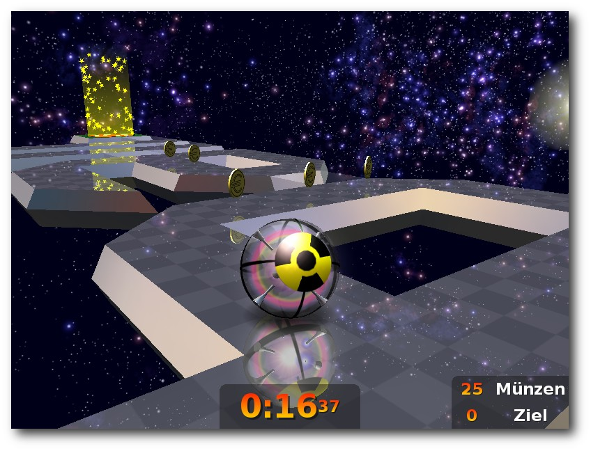

freiesMagazin Oktober 2010 (ISSN 1867-7991)
Topthemen dieser Ausgabe
Python-Programmierung: Teil 1 – Hallo Welt
Python erfreut sich seit einiger Zeit großer Beliebtheit bei Anfängern und Fortgeschrittenen. Die Sprache überzeugt durch Einfachheit und die große Zahl mitgelieferter Bibliotheken. Sowohl als Skript-Sprache, etwa für GIMP, als auch bei eigenständigen Projekten ist Python immer häufiger anzutreffen. Bekannte Programme wie PiTiVi oder BitTorrent setzen auf Python und auch im Hintergrund von Google und Youtube soll die mächtige Sprache nicht mehr wegzudenken sein. Der Artikel bildet den Anfang einer mehrteiligen Einführung in die Programmiersprache Python. (weiterlesen)
Multiboot-Systeme für USB-Sticks und DVDs
Im Artikel „Ubuntu-Live-System von USB-Sticks booten“ in freiesMagazin 04/2010 wurde beschrieben, wie man ein System auf einen USB-Stick bringt und von diesem starten kann – vorausgesetzt es handelt sich dabei um ein ISO- oder IMG-Abbild. Bevor jetzt jedoch für jedes Abbild ein eigener USB-Stick verwendet wird und man sich so einen „Schlüsselbund“ mit Standardsystemen schafft, wie wäre es da mit einem Universal-USB-Stick, auf dem alle Lieblingssysteme gespeichert werden? Natürlich wieder als ISO-Abbild? (weiterlesen)
Ausblick auf Firefox 4.0
Die offizielle Version 4 von Firefox ist immer noch einige Monate entfernt. Sie soll gegen Ende des Jahres erscheinen. Doch mit den bisherigen Alpha- und Betaversionen wurden schon jede Menge Änderungen implementiert. Zudem ist das Programm bereits stabil genug für ausgiebige Benutzung. Es lohnt sich also schon jetzt, einmal einen Blick auf den aktuellen Stand zu wagen. (weiterlesen)
Zum Index
Inhalt
Linux allgemein
Der September im Kernelrückblick
Anleitungen
Python-Programmierung: Teil 1
Multiboot-Systeme für USB-Sticks und DVDs
Software
Ausblick auf Firefox 4.0
Im Test: Fluendo DVD Player
Neverball und Neverputt
Community
Medienkompetente Ausbildung? Nur auf Basis Freier Software
Rezension: Make: Elektronik
Magazin
Editorial
Leserbriefe
Veranstaltungen
Vorschau
Konventionen
Impressum
Zum Index
Editorial
Die Definition von Open Source und Freier Software Letzten Monat wollten wir in einer Umfrage [1] wissen, ob weitere Artikel zu Freier Software, die (ggf. ausschließlich) unter Windows läuft, in freiesMagazin erscheinen sollen. Die Teilnehmerzahl war mit über 500 Abstimmenden ziemlich hoch und auch die 42 Kommentare haben uns sehr gefreut. Dennoch waren wir verwundert, wie sich das Ergebnis der Umfrage herausgestellt hat. Fast die Hälfte unserer Leser (47 %) möchte keine weiteren Artikel zu Freier Software für Windows. Dem stehen 36 % entgegen, die gerne mehr Artikel zu dem Thema hätten. Dem Rest der Leser ist es egal, ob es dazu mehr oder weniger Artikel gibt. Auf einige der Kommentare, die vermutlich mit „Nein“ gestimmt haben, wollen wir eingehen, auch, um einige Behauptungen freiesMagazin betreffend zu korrigieren. „Jeder Microsoft-Softwareartikel schmeißt einen interessanteren Artikel über Linux raus.“ So etwas wäre in der Tat schön, bleibt aber nur ein Traum. Wir haben diese Ausgabe von freiesMagazin nicht ein paar Seiten weniger, weil wir massig fertige Artikel auf Halde haben und nur auf die richtige Gelegenheit warten, bis wir diese veröffentlichen können. Ganz im Gegenteil: Wir hangeln uns bei freiesMagazin von Monat zu Monat und hoffen jedesmal erneut, dass sich ein paar Autoren finden, die das Magazin mit Inhalten füllen. Ein Artikel über Windows-Software schmeißt also keinen Linux-Artikel aus dem Magazin. „Es gibt bereits zahlreiche Windows-Seiten und Windows-Zeitschriften, die Informationen zu Freier Software bereitstellen.“ In der Tat gibt es zahlreiche solcher Windows-bezogenen Inhalte – ebenso wie es diese für Linux gibt. Es gibt allein vier deutsche, große Linux-Nachrichtenportale, die zumeist auch noch sehr ähnliche Inhalte bringen. Und an den Zeitungsständen findet man noch einmal zahlreiche Linux-Zeitschriften. Von den ganzen Blogs wollen wir gar nicht erst anfangen. Unter dieser Prämisse gibt es auch keinen Grund, wieso freiesMagazin überhaupt existiert. Das einzige Herausstellungsmerkmal des Magazins ist, dass es frei (und kostenlos) vertrieben wird. Aber offen gestanden: Uns ist kein deutsches, freies Windows-Magazin bekannt. Diese Lücke, die freiesMagazin also im Linux-Sektor füllt, ist in der Windows-Welt noch offen. „Open Source bzw. Freie Software heißt auf keinen Fall Windows.“ Nun, ziehen wir dazu die Definition von „Open Source“ heran [2]: Dort stehen Punkte wie freie Weitergabe, freie Nutzung, Quellcode bereitstellen etc. Es gibt keinen Punkt, der sagt, dass Open-Source-Software nicht auf proprietären Betriebssystemen laufen darf. Ganz im Gegenteil, der Punkt „No Discrimination Against Persons or Groups“ verbietet sogar eine solche Einschränkung. Ein Entwickler, der die Nutzung seiner Software unter Windows verbietet, darf diese nicht mehr Open Source nennen. Ein Blick auf die Freie-Software-Richtlinien [3] zeigt ein ähnliches Bild: Freiheit 0 („The freedom to run the program for any purpose.“) schließt auch ein, dass man die Software auf einem Windows-Rechner laufen lassen darf – ohne Einschränkung. „Soll freiesMagazin ein Linux-Magazin sein oder ein freies Magazin?“ Der Name freiesMagazin leitet sich nicht von der Berichterstattung, sondern von der Vertriebsmethode ab. Wir glauben, dass jedes Wissen frei sein sollte. Aus dem Grund wird freiesMagazin unter einer freien Lizenz veröffentlicht. Das heißt aber nicht, dass in freiesMagazin nur über Freie Software bzw. Open Source berichtet wird (der aktuelle Artikel zum Fluendo DVD Player zeigt dies recht deutlich). Wir wollen uns mit Absicht nicht auf diese beiden Themen einschränken. „Es sollte nur über Open–Source–Software und nicht über Closed–Source–Freeware berichtet werden.“ Das sehen wir (was reine Windows-Software betrifft) genauso. Aber weder Notepad2 noch Notepad++ sind Close Source oder Freeware. Beide nutzen freie Lizenzen und sind somit ganz normale Open-Source- bzw. Freie Software. Leider haben einige Leser den Artikel wohl nicht so weit gelesen, um dies zu erkennen. „Die meisten freiesMagazin-Leser nutzen Windows nur in Ausnahmefällen.“ Und wie jeder weiß, gibt es keine Ausnahme ohne Regel – oder so ähnlich. An dieser Stelle fällt uns der Verweis auf die freiesMagazin-Umfrage vom März 2009 leicht [4]. Bei der Frage nach dem Betriebssystem nutzen 76 % der 1428 Befragten Windows beruflich und 40 % von 1502 Befragten immer noch privat. Von einer Ausnahme kann hier also nicht die Rede sein, zumal hilfreiche Programme wie Notepad2 oder Notepad++ auch die Arbeit im Büro erleichtern können. „Windows-Nutzer verstehen die Ideologie hinter Freier Software nicht.“ Hier werden leider alle Windows-Nutzer über einen Kamm geschoren. Das ist ähnlich zu der Aussage, dass eine Linux-Distribution sich auch nur über ein Terminal richtig bedienen lässt (auch wenn an dieser Stelle zahlreiche Linux-Nerds sicherlich nicken werden.) Und selbst wenn Windows-Nutzer die Ideologie nicht (auf Anhieb) verstehen, wird es dann nicht Zeit, dass man ihnen diese näher bringt? Die meisten Linux-Nutzer kommen aus dem Windows-Lager. Und in der Regel waren ihre ersten Berührungspunkte mit Open Source und Freier Software auf dem Windows-System. Gegebenenfalls nur, weil sie die Programme kostenlos erhalten haben. In Zeiten von Tauschbörsen ist der Bezug von kostenloser Windowssoftware aber ein geringes Problem. Vielleicht gibt es aber auch Windows-Anwender, die ihre Software lieber legal nutzen wollen. Und vielleicht gibt es sogar welche, die Freie Software einsetzen, weil sie die Idee dahinter gut finden, aus anderen Gründen aber nicht zu einer Linux-Distribution gewechselt sind. Wir hoffen, dass wir mit dem Text ein paar Unklarheiten beseitigt und mit manchen Vorurteilen über Windows und Windows-Nutzer aufgeräumt haben. Es würde uns freuen, wenn die Linux-Community nicht für seine Engstirnigkeit und Intoleranz bekannt ist, sondern als offene und tolerante Gemeinschaft angesehen wird, in der jeder einen Platz findet. Ihre freiesMagazin-Redaktion Links[1] http://www.freiesmagazin.de/20100905-freie-software-fuer-windows
[2] http://www.opensource.org/docs/osd
[3] http://en.wikipedia.org/wiki/Free_Software#Definition
[4] http://www.freiesmagazin.de/mobil/freiesMagazin-2009-03-bilder.html#09_03_umfrage
Das Editorial kommentieren
Zum Index
Der September im Kernelrückblick
von Mathias Menzer Basis aller Distributionen ist der Linux-Kernel, der fortwährend weiterentwickelt wird. Welche Geräte in einem halben Jahr unterstützt werden und welche Funktionen neu hinzukommen, erfährt man, wenn man den aktuellen Entwickler-Kernel im Auge behält. Der noch im August veröffentlichte 2.6.36-rc3 [1] hatte nicht viel Aufregendes zu bieten. Immerhin gibt es mit dem Netzwerktreiber für Marvells Mobil-Prozessor PXA168 einen Neuzugang, ansonsten beschränken sich die Änderungen auf Aktualisierungen der Treiber, allen voran wieder einmal die Grafik-Treiber radeon und nouveau. Daneben wurde aus dem staging-Bereich, in dem Treiber für die kommenden Kernel-Versionen reifen dürfen, der „Security Processor Driver“ entfernt. Er sollte für Intels Mobile Internet Devices als Schnittstelle zwischen Anwendungen, die im Kontext des Benutzers laufen, und dem Security Processor dienen, machte aber nicht die erwarteten Fortschritte und wurde daher des Feldes verwiesen. Dazu kamen noch Korrekturen für Fehler in den Dateisystemen Ceph und CIFS; letzteres ersetzt das Authentisierungsprotokoll NTLMv1 durch die Nachfolgeversion v2 bei der Authentisierung gegen Microsofts Authentisierungsinstanz NTLMSSP. Die Grafik-Front war auch beim -rc4 [2] vorne mit dabei. Diesmal gehörte auch der Intel-Treiber i915 zu den Schuldigen, bei dem ein paar frühere Änderungen zurückgenommen und einige Fehler korrigiert wurden. Ein größerer Batzen kommt dann noch durch die Verschiebung eines PCI-Treibers in ein anderes Verzeichnis zustande. Torvalds machte die Entwickler auch darauf aufmerksam, dass beim Beheben von Problemen nicht nur die Entwickler, sondern auch diejenigen im Patch eingetragen werden sollten, die den Fehler berichtet haben. Es gäbe bereits viele solcher „Reported-by“-Nennungen, aber sie sollten häufiger genutzt werden, um auch das Aufspüren von Problem anzuerkennen, das manchmal weniger trivial als der abschließende Fix sein kann. Zur Veröffentlichung des 2.6.36-rc5 [3] wurde zuerst einmal das in -rc3 für NTLMSSP eingesetzte NTLMv2 (siehe oben) mitsamt aller Versuche, damit einhergehende Probleme zu beheben, zurückgenommen. Diese Änderung wird vorerst auf 2.6.37 verschoben. Die Dokumentation zu der neuen Prozessverwaltung „workqueue“ (siehe freiesMagazin 09/2010 [4]) kam noch hinzu, ansonsten beliefen sich die Änderungen hauptsächlich auf kleinere Korrekturen im Bereich der Systemarchitekturen und Treiber. Lediglich kleinere Änderungen konnte -rc6 [5] vorweisen. Hier trübte mit etwa einem Drittel der modifizierten Quelltextzeilen lediglich eine Umbenennung des VMware Balloon Treibers die Statistik, der einer virtuellen Maschine zugunsten des Gastes Arbeitsspeicher klauen kann. Ansonsten ging die Zahl der Änderungen tendenziell weiter zurück, ein Zeichen dafür, dass die Veröffentlichung der Final-Version des Kernels kurz bevorstehen dürfte. Vorerst in Kroah-Hartmans Kernel-Zweig „staging-next“ landete der neue, vollständig offene Broadcom-Treiber für die WLAN-Chips BCM4313, BCM43224 und BCM43225 [6] [7]. Der Treiber basiert auf dem aktuellen WLAN-Stack mac80211 und soll gleichzeitig die Basis künftiger Treiber für Embedded-Chips von Broadcom sein. Dank der frühzeitigen Aufnahme stehen die Chancen nicht schlecht, dass der Treiber bereits im Kernel 2.6.37 zu finden sein könnte. Sicherheitslücken kommen im Kernel immer mal wieder vor, meistens können sie jedoch innerhalb kurzer Zeit geschlossen werden. Dass eine bereits geschlossene Lücke jedoch wieder neu implementiert wird, ist jedoch ein Novum [8]. Ein Patch, mit dem das Verfolgen von Systemaufrufen vereinfacht werden sollte, machte die Korrektur für eine frühere Lücke unwirksam, mit der auf 64-Bit-Systemen ein Benutzer Superuser-Rechte erlangen könnte. Dies geschah Mitte 2008, entsprechend sind relativ viele Kernel-Versionen von dem wieder aufgetauchten Problem betroffen. Der Patch [9] mit der Korrektur dieses Problems wurde in den -rc5 aufgenommen und ebenso in alle derzeit offiziell gepflegten Kernel-Versionen. Und noch eine kleine Notiz am Rande: Nachdem Linus Torvalds seit mittlerweile 13 Jahren in den USA lebt und zwei seiner Kinder als Amerikaner geboren wurden, hat er nun die US-amerikanische Staatsbürgerschaft angenommen. Standesgemäß gab er dies im Nebensatz einer E-Mail zu einem Patch bekannt: „Ich wurde ein US-Bürger.“ [10].|
Kurz erläutert: „Zweig / Branch“ Zur Entwicklung kopieren sich viele Entwickler den Kernel-Quelltext in ein neues Repository, in welchem sie dann Änderungen vornehmen: Sie erzeugen damit einen neuen Zweig (englisch: Branch) des Kernels. Diese Zweige, beziehungsweise die an ihnen vorgenommenen Änderungen, können auch wieder mit dem originären Kernel verschmolzen werden. Dies geschieht insbesondere zu Beginn eines neuen Entwicklungszyklus während des „Merge Window“ (siehe freiesMagazin 04/2010 [11]). Größere Zweige werden oft auch als „Tree“ (zu deutsch: Baum) bezeichnet. Ein bekannter Zweig ist beispielsweise „linux-next“, der unter anderem den „staging-next“-Zweig enthält und einen Ausblick auf die kommenden Kernel-Versionen erlaubt. Ebenfalls bekannt ist „staging“, das sich in der Verzeichnisstruktur des jeweils aktuellen Entwicklerkernels unter /drivers/staging befindet. |
Links
[1] http://lkml.org/lkml/2010/8/29/83
[2] http://lkml.org/lkml/2010/9/12/202
[3] http://lkml.org/lkml/2010/9/20/446
[4] http://www.freiesmagazin.de/freiesMagazin-2010-09
[5] http://git.kernel.org/?p=linux/kernel/git/torvalds/linux-2.6.git;a=commit;h=899611ee7d373e5eeda08e9a8632684e1ebbbf00
[6] http://www.freiesmagazin.de/freiesMagazin-2010-04
[7] http://article.gmane.org/gmane.linux.kernel.wireless.general/55418
[8] http://git.kernel.org/?p=linux/kernel/git/gregkh/staging-next-2.6.git;a=commit;h=a9533e7ea3c410fed2f4cd8b3e1e213e48529b75
[9] http://www.admin-magazin.de/content/sicherheitsluecke-wieder-im-linux-kernel
[10] http://git.kernel.org/?p=linux/kernel/git/torvalds/linux-2.6.git;a=commit;h=eefdca043e8391dcd719711716492063030b55ac
[11] http://lkml.org/lkml/2010/9/13/342
| Autoreninformation |
| Mathias Menzer wirft gerne einen Blick auf die Kernel-Entwicklung, um mehr über die Funktion von Linux zu erfahren und seine Mitmenschen mit seltsamen Begriffen und unverständlichen Abkürzungen verwirren zu können. |
Zum Index
Python-Programmierung: Teil 1 – Hallo Welt
von Daniel Nögel Python erfreut sich seit einiger Zeit großer Beliebtheit bei Anfängern und Fortgeschrittenen. Die Sprache überzeugt durch Einfachheit und die große Zahl mitgelieferter Bibliotheken. Sowohl als Skript-Sprache, etwa für GIMP, als auch bei eigenständigen Projekten ist Python immer häufiger anzutreffen. Bekannte Programme wie PiTiVi oder BitTorrent setzen auf Python und auch im Hintergrund von Google und Youtube soll die mächtige Sprache nicht mehr wegzudenken sein. Dieser Artikel bildet den Anfang einer mehrteiligen Einführung in die Programmiersprache Python. Python ist mittlerweile bei allen großen Distributionen vorinstalliert – meist in der Version 2.6+. In der Version 3.0 gab es einige größere Änderungen, die hier – wo möglich – bereits übernommen werden. Wo nicht möglich, wird auf die bevorstehende Änderung hingewiesen. Gleichzeitig sei aber auch angemerkt, dass diese Einführung nicht jede Methode und jede Funktion erörtern kann, die zum Standardrepertoire von Python gehört. Vielmehr soll ein Einblick in die Sprache geliefert werden, der – wo es notwendig ist – hilfreiche und wichtige Methoden kurz anspricht. Für tiefer gehende Einblicke empfiehlt sich beispielsweise die offizielle Dokumentation von Python [1].Die interaktive Shell
Python-Skripte werden nicht kompiliert, sondern zur Laufzeit von einem Interpreter ausgeführt. Python-Skripte sind somit immer direkt lauffähig. Der Python-Interpreter hat zudem einen interaktiven Modus – hier können Befehle direkt abgesetzt werden. Dieser interaktive Modus kann in einem Terminal mit dem Befehl
$ python |
Die interaktive Python-Konsole nach dem Start (hier: Version 2.6.5).
Hinter der Eingabeaufforderung (>>>) können beliebige Python-Befehle abgesetzt werden. Die Befehlszeile
>>> print("Hallo Python!")
|
>>> 3+7 10 >>> 7*10 70 >>> 3-7 -4 >>> 8/4 2 >>>8/3 2 |
>>> 8/3.0 |
Hallo Welt
Ein erstes kleines Skript ist im Texteditor der Wahl schnell erstellt. Anders als in der interaktiven Python-Konsole, wo Eingaben direkt berechnet und auf den Bildschirm ausgegeben werden, benötigt man in eigenständigen Skripten eine Funktion, welche die gewünschten Informationen auf dem Bildschirm ausgibt – dazu dient in Python die print()-Funktion. Nur in der interaktiven Konsole kann auf diese Funktion in der Regel verzichtet werden (wie etwa bei den mathematischen Operationen oben).
#!/usr/bin/env python
# -*- coding: utf-8 -*-
print("Hallo Welt!")
|
$ chmod +x hello_world.py |
$ ./hello_world.py |
$ python hello_world.py |
Hallo Welt! |
Das erste „nützliche“ Programm
Als nächstes soll ein etwas ambitionierteres Projekt in Angriff genommen werden: Der Benutzer soll seinen Namen eingeben können und diesen dann in einer Box aus Gleichheitszeichen dargestellt bekommen.
#!/usr/bin/env python
# -*- coding: utf-8 -*-
name = raw_input("Hallo! Wie heisst du? ")
name_with_borders = "= {0} =".format(name)
line = "=" * len(name_with_borders)
print(line)
print(name_with_borders)
print(line)
|
Hallo! Wie heisst du? Margot ========== = Margot = ========== |
Zeichenketten
Jetzt wurden bereits erste Erfahrungen mit Zeichenketten gesammelt. Diese sollen hier vertieft werden: Zeichenketten müssen immer von Anführungszeichen umschlossen werden. Möglich sind einfache und doppelte Anführungszeichen:
name = "Bernd" name = 'Bernd' |
message = "Ich heisse "Bernd"!" |
message = "Ich heisse 'Bernd'!" |
message = 'Ich heisse "Bernd"!' |
print("Hier kann ich " und ' nach Belieben einsetzen!
Ausserdem sind sogar Zeilenumbrueche moeglich!")
|
message = "Ich heisse \"Bernd\"!" |
>>> print("Ein \nZeilenumbruch")
Ein
Zeilenumbruch
|
Zeichenketten näher betrachtet
Zeichenketten in Python gehören – wie auch Zahlen – zu den unveränderbaren Datentypen. Jede Veränderung an einer Zeichenkette liefert immer eine neue Zeichenkette zurück.
>>> text1 = "HALLO!!!" >>> text2 = text1.lower() >>> print(text1) 'HALLO!!!' >>> print(text2) 'hallo!!!' |
>>> text = "HALLO!!!" >>> text = text.lower() >>> print(text) 'hallo!!!' |
>>> "Ich finde Python doof".replace("doof", "super")
'Ich finde Python super'
|
Richtig einrücken
Viele Programmiersprachen kennen bestimmte Kontrollstrukturen, die den Programmfluss in besonderer Weise beeinflussen. Hier ein Beispiel in Pseudocode:
zaehler = 1 solange zahler <= 5 wiederhole: gib zaehler auf dem Bildschirm aus erhoehe zaehler um 1 gib "fertig" auf dem Bildschirm aus |
zaehler = 1 solange zahler <= 5 wiederhole: gib zaehler auf dem Bildschirm aus erhoehe zaehler um 1 gib "fertig" auf dem Bildschirm aus |
for-Schleife
Zuletzt soll hier nun die for-Schleife besprochen werden. Mit dieser Schleife kann man beliebige Anweisungen beliebig oft ausführen lassen. Mit folgendem einfachen Beispiel werden zehn Zahlen nacheinander ausgegeben:
#!/usr/bin/env python
# -*- coding: utf-8 -*-
for i in range(0, 10):
print(i)
print("Fertig")
|
0 1 2 3 4 5 6 7 8 9 Fertig |
[1] http://docs.python.org/
[2] http://www.python.org/dev/peps/pep-0238/
[3] http://www.freiesmagazin.de/freiesMagazin-2009-11
[4] http://www.python.org/doc//current/reference/lexical_analysis.htmli#grammar-token-escapeseq
[5] http://docs.python.org/library/stdtypes.html#string-methods
| Autoreninformation |
| Daniel Nögel beschäftigt sich seit drei Jahren mit Python. Ihn überzeugt besonders die intuitive Syntax und die Vielzahl der unterstützten Bibliotheken, die Python auf dem Linux-Desktop zu einem wahren Multitalent machen. |
Zum Index
Multiboot-Systeme für USB-Sticks und DVDs
von Kirsten Roschanski Im Artikel „Ubuntu-Live-System von USB-Sticks booten“ in freiesMagazin 04/2010 [1] wurde beschrieben, wie man ein System auf einen USB-Stick bringt und von diesem starten kann – vorausgesetzt es handelt sich dabei um ein ISO- oder IMG-Abbild. Bevor jetzt jedoch für jedes Abbild ein eigener USB-Stick verwendet wird und man sich so einen „Schlüsselbund“ mit Standardsystemen schafft, wie wäre es da mit einem Universal-USB-Stick, auf dem alle Lieblingssysteme gespeichert werden? Natürlich wieder als ISO-Abbild?Einleitung
Es ist nicht selten, dass für verschiedene Anwendungen verschiedene Systeme benötigt werden. Zum Beispiel ein System mit einem integrierten Antivirenprogramm, ein 32-Bit- oder ein 64-Bit-Live-System oder ein System mit leichtgewichtigem Desktop. Hinzu kommt, dass die Speicherkapazität der USB-Sticks sehr hoch ist und darum zu viel Platz verschenkt wird, wenn nur ein System pro Stick installiert wird. Aus diesem Grund ist es ratsam, nach anderen Möglichkeiten zu suchen und diese hinsichtlich Aufwand und Funktion zu prüfen. In der Anleitung soll nicht auf die Installation von mehreren Systemen auf einem externem Medium eingegangen werden, sondern auf die Möglichkeit, Installationsabbilder bzw. Rettungsabbilder auf einem externen Medium unterzubringen.Vorbereitung
Zum besseren Verständnis und damit für jeden die gleiche Ausgangssituation vorliegt, folgen nun die in diesem Artikel verwendeten Begriffe mit deren Erklärung, die Zusammenhänge sowie die Vorbereitung für die Installation. Beim Start eines Rechners durchsucht das BIOS (Basic Input Output System [2]) den MBR (Master Boot Record [3]) nach einem Programm, welches ihm mitteilt, wo und wie das Betriebssystem zu starten ist. Auf jedem bootfähigen Medium befindet sich genau ein MBR, welcher sich in sogenannte Boot-Sektoren unterteilen lässt. Dabei ist zu beachten, dass aus historischer Sicht ein Medium nur vier primäre Partitionen (virtuelle Laufwerke) haben kann. Dieses wird sich mit dem endgültigen Durchsetzen des EFI (Extensible Firmware Interface [4]) hoffentlich erledigen; bis dahin muss man die Zeit aber mit dem BIOS überbrücken. Möchte man bei der Anwendung eines Systems mit BIOS über mehr Partitionen verfügen, so wird die letzte, vierte primäre Partition in erweiterte Partitionen unterteilt. Das Besondere an primären Partitionen ist, dass diese jeweils einen eigenen Boot-Sektor besitzen, von denen das System gestartet werden kann. Ein System kann auch von erweiterten Partitionen gestartet werden, jedoch nur über den Weg des Boot-Sektors der primären Partitionen. Daher kann man das Laden eines Betriebssystem wie folgt beschreiben: BIOS -> Bootloader (MBR) -> Betriebssystem Hingegen sieht das Laden eines Betriebssystem bei einer erweiterten Partition wie folgt aus: BIOS -> Bootloader (MBR) -> Bootloader (Boot Sektor) -> Betriebssystem Standardmäßig dient die interne Festplatte zum Laden mehrerer Systeme. Mit der Nutzung eines externen Mediums, wie zum Beispiel einer USB-Festplatte, einer DVD/CD oder eines USB-Sticks, kann man das umgehen. Am Beispiel eines Multiboot-USB-Sticks werden nachfolgend die Schritte zur Installation beschrieben. Es sei aber angemerkt, dass sich die Schritte genauso für jedes andere externe Medium anwenden lassen. Einzig die DVD/CD lässt sich nicht direkt erstellen, dazu später aber mehr. Voraussetzung ist ein mit FAT32 vorformatierter bootfähiger USB-Stick, bei dem bereits das „Boot-Flag“ gesetzt ist. Die Vorgehensweise hierfür ist bereits in der Aprilausgabe von freiesMagazin [1] ausführlich beschrieben und nachzulesen. Darüber hinaus sollte das BIOS in der Lage sein, von einem USB-Stick ein System zu laden.Die Möglichkeiten
Bisher war es nicht immer ganz so leicht, vernünftige Multiboot-Systeme zu erstellen. Selbst erfahrene Linux-Nutzer haben gerne die Finger davon gelassen. Die bisher gängigen Varianten – verbunden mit viel Arbeit – sind Syslinux [5] und GRUB4DOS [6]. Syslinux bzw. besser ausgedrückt die „Unterkategorie“ Isolinux ist dabei wahrscheinlich die bekannteste der beiden Möglichkeiten, denn viele Distributionen verwenden es, um die ISO-Abbilder bootfähig zu machen. GRUB4DOS verfolgt den gleichen Ansatz, erweitert aber das bestehende Projekt, sodass es unter DOS und Windows ausführbar ist. Bei beiden Varianten wird als Bootloader GRUB [7] verwendet. Hierbei müssen die ISO-Abbilder ausgepackt und teilweise Modifikationen an den bestehenden Dateien vorgenommen werden. Um seinen USB-Stick immer auf dem aktuellsten Stand zu halten, bedarf es daher reichlich Zeit und auch Nerven. Einen schöneren Ansatz bietet der Bootloader GRUB2 [8], denn dieser kann Dank „loopback“ einfach die ISO-Abbilder laden. Das bedeutet, dass der USB-Stick anschließend leicht zu warten ist und auch mal schnell ein neues System ohne großen Zeitaufwand getestet werden kann. Für das Erstellen des Multiboot-Sticks braucht man circa fünf Minuten – ohne die Zeit für das Herunterladen der ISO-Abbilder einzurechnen. Hinweis: Erstellt wird hier die Anleitung mit einem Ubuntu-System, daher werden sich alle Eingaben auf dieses System beziehen. Wenn ein anderes System verwendet wird, können die Befehle ggf. etwas abweichen. Wenn man die Schritte eins zu eins nachvollziehen möchte, sich aber nicht extra Ubuntu installieren möchte, ist die Nutzung einer Live-CD zu empfehlen.GRUB2
An dieser Stelle soll nun ein Multiboot-USB-Stick mit dem Bootloader GRUB2 erstellt werden. Dazu wird der USB-Stick an den Rechner angeschlossen. Es folgen nur wenige Eingaben in der Konsole bzw. dem Terminal und mit dem Download der ISO-Abbilder wird begonnen. Dieser benötigt mehr Zeit als die Eingaben der Befehle. Für die Anleitung werden jetzt folgende Distributionen heruntergeladen:- Ubuntu Live 10.04 32bit [9]
- Ubuntu Live 10.04 64bit [9]
- Debian-CD [10]
- GParted Live [11]
- Linux Mint [12]
- Knoppix [13]
- DSL [14]
- Desinfec't 8 (leider gab es die aus rechtlichen Gründen nur auf der c't 02/2010 [15])
Die Ausgabe von df -h.
In Falle des Testsystems liegt er auf /dev/sdb1 und ist unter /media/35BA-F91E eingehängt. Das ist wichtig, da gleich damit gearbeitet werden muss. Um das Dateisystem aufzuspielen, benutzt man folgenden Befehl:
# mkfs.vfat -n USB-Id Geraet |
# mkfs.vfat -n 35BA-F91E /dev/sdb1 |
# grub-install --no-floppy --root-directory=/media/USB-Id Geraet |
# grub-install --no-floppy --root-directory=/media/35BA-F91E /dev/sdb |
# mount -o loop image.iso /mnt |
menuentry "Ubuntu Live 10.04 32bit" {
loopback loop /images/ubuntu-10.04-desktop-i386.iso
linux (loop)/casper/vmlinuz boot=casper iso-scan/filename=/images/ubuntu-10.04-desktop-i386.iso lang=de noeject noprompt --
initrd (loop)/casper/initrd.lz
}
|
$ qemu -m 512 -hda /dev/sdd |
Das erstellte Bootmenü, aus welchem die Distribution geladen werden kann.
Das Speichern der Daten ist in einem ISO-Abbild nicht möglich. Es besteht auch hier die Möglichkeit, das ISO-Abbild zu entpacken und anschließend die Bootparameter entsprechend anzupassen. Dies ist z. B. sinnvoll, wenn man eines der Betriebssysteme zum Arbeiten am Schlüsselbund mitnehmen möchte. Carsten Grohmann [18] hat eine sehr ausführliche Anleitung zu diesem Thema mit Isolinux erarbeitet. Im Gegensatz zu der loopback-Methode mit dem Bootloader GRUB2 erkennt man, dass die Methode mit Isolinux umständlicher zu handhaben ist als die hier im Artikel vorgestellte Lösung.
DVD/CD
Wie schon angesprochen, lassen sich auch indirekt mit dieser Methode Multiboot-Abbilder erstellen, die anschließend auf ein DVD/CD-Medium übertragen werden können. Dazu wird ein virtueller Ordner erstellt, in dem alle Projektdateien gespeichert werden. Mit dem Befehl mkisofs wird dieser anschießend zu einem ISO-Abbild zusammengepackt und danach auf das Medium geschrieben. Am Ende der Anleitung von Carsten Grohmann [18] ist dies nachzulesen, denn er nutzt die gleiche Methode, um seine erzeugten Projektdateien in ein ISO-Abbild zu packen.Fazit
Nachdem alles wunderbar funktioniert, müssen doch Einschränkungen hingenommen werden, denn Knoppix und DSL lassen sich nicht starten. Warum das so ist, lässt sich aus heutiger Sicht leider nicht mit Sicherheit sagen. Beide hängen sich bei der USB-Device-Erkennung auf und leiten den Nutzer in die Debugging-Shell weiter. Auch wenn zwei der Destributionen nicht funktionstüchtig sind, so bleibt die Erstellung der Multiboot-Medien eine sehr einfache und schnell nachzuvollziehende Methode. In nur fünf Minuten kann durch den GRUB2 dank loopback ein Multiboot-USB-Stick erstellt werden. Es können zwar keine Daten gespeichert werden, aber dennoch ist der Einsatz verschiedener Betriebssysteme schnell möglich. Links[1] http://www.freiesmagazin.de/freiesMagazin-2010-04
[2] http://de.wikipedia.org/wiki/Basic_Input_Output_System
[3] http://de.wikipedia.org/wiki/Master_Boot_Record
[4] http://de.wikipedia.org/wiki/Extensible_Firmware_Interface
[5] http://syslinux.zytor.com/
[6] http://GRUB4dos.sourceforge.net/wiki/
[7] http://www.gnu.org/software/grub/grub-legacy.en.html
[8] http://www.gnu.org/software/grub/
[9] http://www.ubuntu.com/
[10] http://www.debian.com/
[11] http://www.gparted.sourceforge.net/livecd.php
[12] http://www.linuxmint.de/
[13] http://www.knopper.net/knoppix/
[14] http://www.damnsmalllinux.org/
[15] http://www.heise.de/software/download/desinfect/71642
[16] http://wiki.ubuntuusers.de/qemu
[17] http://www.panticz.de/MultiBootUSB
[18] http://www.carstengrohmann.de/multiboot.html
| Autoreninformation |
| Kirsten Roschanski hat selbst eine Möglichkeit gesucht, um im First-Level-Support schnell Zugriff auf verschiedene Distributionen zu haben, ohne diese alle installieren zu müssen, sie aber dennoch anschließend einfach warten zu können. |
Zum Index
Ausblick auf Firefox 4.0
von Hans-Joachim Baader Die offizielle Version 4 von Firefox [1] ist immer noch einige Monate entfernt. Sie soll gegen Ende des Jahres erscheinen. Doch mit den bisherigen Alpha- und Betaversionen wurden schon jede Menge Änderungen implementiert. Zudem ist das Programm bereits stabil genug für ausgiebige Benutzung. Es lohnt sich also schon jetzt, einmal einen Blick auf den aktuellen Stand zu wagen. Redaktioneller Hinweis: Der Artikel „Ausblick auf Firefox 4.0“ erschien erstmals bei Pro-Linux [2] unter der GNU Free Documentation License [3].Installation
Die vierte Betaversion liegt in 39 Sprachen vor, weitere sollen noch hinzukommen. Der Download ist vom Server des Projektes [4] möglich. Wer eine 64-Bit-Version möchte, findet diese auf dem Downloadserver [5] von Mozilla. Letztere wird auch für diesen Test benutzt. Die Installation ist trivial wie immer:
$ tar xvjf firefox-4.0b4.tar.bz2 |
Erster Aufruf von Firefox 4.
Video
Vielleicht die am meisten herbeigesehnte Neuerung von Firefox 4 ist die im Rahmen von HTML5 erfolgte Unterstützung des Video-Tags und darüber hinaus der eingebaute VP8-Codec [7], mit dem man nebenbei auch Theora-Videos ohne Plug-in abspielen kann. Die getesteten Videos, hauptsächlich von YouTube, erwiesen sich allerdings teilweise als problematisch. Während Theora-Videos und einige VP8-Videos gut funktionierten, waren VP8-Videos von YouTube extrem ruckelig. Nachdem Adobe das 64-Bit-Flash-Plug-in wieder abgesagt hat, ruhen die Hoffnungen verstärkt auf den freien Projekten Lightspark [8] und Gnash [9]. Da letzteres gerade mit Version 0.8.8 eine stark verbesserte YouTube-Unterstützung angekündigt [10] hat, wurde das Plug-in getestet. Unter Debian stand Version 0.8.8 schon kurz nach der Freigabe im Repository experimental zur Verfügung, wenige Tage später auch in sid; es ließ sich problemlos in einem testing-System installieren. Und tatsächlich konnte es die meisten getesteten Videos problemlos abspielen. Bei einigen wenigen gibt es noch Probleme, wobei es auch zu einem Hänger von Gnash kommen kann, allerdings ohne Absturz.Video mit Gnash 0.8.8.
Firefox Sync
Die größte Neuerung in der letzten Betaversion war Firefox Sync [11]. Diese neue Funktion ist für die Versionen 3.5 und 3.6 von Firefox bereits als Erweiterung verfügbar und nun in den Browser eingebaut. Das Modul synchronisiert alle Einstellungen und Lesezeichen von Firefox verschlüsselt mit anderen Firefox-Instanzen. All das geht allerdings nur über einen Server. Zuerst muss man es einrichten, was ziemlich einfach geht, zumindest wenn man den Firefox-Sync-Server benutzt. Die Einrichtung eines eigenen Servers, die auch eine Option ist, ist nicht Gegenstand dieses Artikels. Zur Einrichtung der Synchronisation muss man ein Passwort, eine E-Mail-Adresse, einen Rechnernamen und eine weitere Passphrase vergeben. Die Bestätigung der Anmeldung erfolgt mit einem Captcha. Das ist schon alles, die Synchronisation mit dem Server sollte nun automatisch einmal am Tag erfolgen. Man kann sie aber auch über das Menü „Extras -> Sync -> Jetzt Synchronisieren“ anstoßen. Ebenso gibt es Menüpunkte für „Verbinden“ und „Trennen“. Zur Verwaltung der Verbindung gibt es einen neuen Menüpunkt in den Einstellungen, der sich rechts vom „Erweitert“-Icon befindet. Dort kann man auch die derzeitige Einstellung löschen, woraufhin man eine neue Synchronisation einrichten kann. Mehr als eine zugleich kann offenbar nicht existieren.Erster Start von Firefox Sync.
Weitere Neuerungen
Ein großes Thema war der Schutz vor Abstürzen in Plug-ins, die auch in Firefox ab Version 3.6.4 implementiert wurde. Vorher bedeutete ein Absturz in einem Plug-in – notorisch waren hier insbesondere proprietäre Plug-ins – den Absturz des gesamten Browsers. Jetzt laufen diese Plug-ins in separaten Prozessen und bei einem Problem wird nur noch im betroffenen Tab eine Fehlermeldung angezeigt, während der Browser mit den anderen Tabs weiterläuft. Etwas kontrovers wurde bekanntlich die Änderung aufgenommen, die Tabs nach oben, über die URL-Leiste zu setzen. Unter Linux ist dies in der vierten Betaversion nun optional. Standardmäßig ist es ausgeschaltet. Mit einer Option im Kontextmenü, das beim Rechtsklick auf die Tab-Leiste erscheint, kann man sie einschalten. Die neue Anordnung kann Vorteile haben, wenn man viel in einzelnen Tabs in Kombination mit der URL-Leiste arbeitet und Nachteile, wenn man oft zwischen Tabs wechseln muss. Jeder Benutzer muss letztlich selbst herausfinden, welche Option für ihn günstiger ist. Eine weitere für manche Benutzer bedeutsame Neuerung ist Firefox Panorama [12]. Das früher als „Tab Candy“ bekannte Modul dient zur Übersicht, Sortierung und Gruppierung von offenen Tabs. Es wird über das Icon „Tabs gruppieren“ rechts in der Tab-Leiste oder den Menüpunkt „Ansicht -> Tabs gruppieren...“ aufgerufen.Firefox Panorama.
Mit Tabs kann man aber noch mehr machen. Per Kontextmenü kann man ein Tab zu einem „App Tab“ machen. App-Tabs rutschen nach links in der Tableiste und beanspruchen dort weniger Platz. Es sollte auch unnötige Kontrollelemente verschwinden lassen, um Platz zu sparen. Welche das allerdings sein sollen, konnte nicht herausgefunden werden.
Pro-Linux als App Tab.
Das URL-Eingabefeld akzeptiert mittlerweile nicht mehr nur URLs. Gibt man einen Suchbegriff ein, so findet Firefox auch passende geöffnete Tabs und bietet die Option an, zu diesem zu wechseln. Auf den ersten Blick scheint diese Option nicht sehr nützlich zu sein, aber es gibt ja offenbar eine größere Zahl von Anwendern, die Dutzende von Tabs nutzen. Hat man mehr als ein Browserfenster offen, die auf mehrere virtuelle Desktops verteilt sind, dann sorgt das Auswählen eines Tabs dafür, dass nötigenfalls zu dem betreffenden Browserfenster auf einem anderen virtuellen Desktop umgeschaltet wird. Der größte Teil der Firefox-Erweiterungen wurde noch nicht an Firefox 4 angepasst. Wer helfen will, diese Anpassung voranzutreiben, kann die Erweiterung „Compatibility Reporter“ [13] installieren. Geändert wurde allerdings schon die Erweiterungsverwaltung. Diese benutzt jetzt keine Dialogbox mehr, sondern öffnet ein neues Tab, wodurch natürlich mehr Platz zur Verfügung steht. Diese Änderung ist noch keineswegs fertig, insbesondere ist die Suche nach neuen Erweiterungen noch nicht gelöst. Es ist offensichtlich, dass hier noch weitere Änderungen kommen müssen. Andere Verwaltungsfenster sollen nach den Plänen der Entwickler in ähnlicher Weise erneuert werden, das ist aber erst im Entwurfsstadium.
Erweiterungsverwaltung.
Das API für die Erweiterungen sollte mit Jetpack [14] bekanntlich völlig neu gestaltet werden. Für frühere Firefox-Versionen war Jetpack als Prototyp in Form einer Erweiterung verfügbar. Nachdem es keine Hinweise auf diese Neuerung in der Beta 4 gab, kam nach einer kurzen Suche heraus, dass Jetpack für die neue Version nicht mehr verfügbar ist. Es wurde durch das Jetpack SDK [15] ersetzt. Erweiterungen, die das neue SDK benutzen, können gemeinsam mit den bisherigen Erweiterungen auf der Webseite von Mozilla angeboten werden. Vermutlich nutzt erst ein kleiner Teil der Erweiterungen die neue API. Die meisten Erweiterungen, soweit sie für Firefox 4 Beta 4 freigegeben sind, benötigen weiterhin einen Neustart des Browsers. Eine kleinere Optimierung ist die Zusammenlegung der Buttons für erneutes Laden und Stopp des Ladens einer Webseite in der URL-Leiste. Während des Ladens fungiert der Button als Stopp-Button, danach als Reload-Button. Eine weitere Optimierung, um Platz zu sparen, ist die Reduzierung der Lesezeichenfunktionen in der Lesezeichenleiste auf einen Button. Diese Änderung ist hoffentlich noch nicht ganz fertig, denn einerseits ist es nicht sehr konsistent, einen Button zum Aufklappen eines Menüs zu benutzen und andererseits ist der Menüpunkt „Lesezeichen“ mit genau den gleichen Optionen weiter vorhanden. Durch die Bank wurden Maßnahmen getroffen, um die Geschwindigkeit des Browsers zu erhöhen. Der Erfolg dieser Maßnahmen ist allerdings schwer einzuschätzen, da Firefox schon in früheren Versionen für die meisten Anwender schnell genug war. Es gibt einzelne Fälle, wo ein langsames Laden aus dem Web frühere Versionen des Browsers zu Denkpausen zwang. Solche Fälle mit Firefox 4 gezielt zu reproduzieren, war jedoch aufgrund der Zeitknappheit nicht möglich. Neben Erhöhungen der JavaScript-Geschwindigkeit sollen auch Neuerungen wie die verzögerte Erzeugung von Frames [16] für eine schnellere Ausführung sorgen. Auch die Interaktivität wurde verbessert. Aktionen, die früher zu Verzögerungen bei der Reaktion der grafischen Oberfläche führen konnten, wurden zum Teil in separate Threads ausgelagert, zum Beispiel die Suche in der Link-Historie. Weitere Neuerungen sind Unterstützung für CSS-Transitionen und WebGL, das allerdings standardmäßig noch abgeschaltet ist. Die Unterstützung für HTML5 wird immer vollständiger. So wurde ein neuer HTML5-Parser [17] entwickelt, der auch asynchron arbeitet. Da auch die anderen wichtigen Browser immer mehr HTML5-Features anbieten, wird sicherlich kein Web-Entwickler mehr lange zögern, seine Seiten auf HTML5 aufzubauen. Da spielt es auch keine Rolle mehr, dass der offizielle HTML5-Standard vielleicht noch viele Jahre entfernt ist. Entscheidend ist, dass er als relativ stabiler Entwurf vorliegt, an dem sich nicht mehr so viel ändern wird. Welche Teile von HTML5 in Firefox 4 noch fehlen, kann nicht genau gesagt werden. Viel dürfte es nicht mehr sein, und durch den Wettbewerb mit den anderen Browsern wird der Rest sicher ziemlich schnell kommen. Viele Neuerungen enthält Firefox 4 auch für Web-Entwickler. Neben HTML5, das eine große Zahl neuer APIs definiert, wurden auch andere APIs hinzugefügt. Einzelheiten sind den Webseiten von Firefox 4 for Developers [18] zu entnehmen. Im Abstand von zwei bis drei Wochen sollen neue Betaversionen erscheinen, die auch noch neue Funktionen bringen werden, damit diese getestet werden können. Mit den Rückmeldungen der Benutzer sollen die neuen Funktionen verbessert werden, aber Funktionen, die viel negatives Feedback erhalten, könnten auch wieder entfallen. Für solche Rückmeldungen ist in der Betaversion ein Plug-in installiert, das die Abgabe von Rückmeldungen [19] erleichtert. Dieses enthält auch die Funktionalität von Test Pilot [20], mit dem das Verhalten der Benutzer anonym ausgewertet werden kann, um die Bedienung weiter zu verbessern. Die Teilnahme an diesem Test ist optional.
Fazit
Firefox 4 ist mit der vierten Betaversion schon stabil genug für breite Tests, wenn auch offiziell noch nicht für den produktiven Einsatz. Doch die neueste Version einer Freien Software ist fast immer die beste und die neuen Features machen Firefox 4 jetzt schon attraktiv. Freilich ist die Entwicklung noch nicht zu Ende, was man an diversen Inkonsistenzen und unvollständigen Funktionen auch klar sehen kann. Alles in allem wird Firefox 4 vieles besser machen als frühere Versionen. Auch in Zukunft ist mit Firefox stark zu rechnen. Links[1] http://www.mozilla.com/en-US/firefox/4.0b4/releasenote
[2] http://www.pro-linux.de/artikel/2/1458/ausblick-auf-firefox-40.html
[3] http://www.gnu.org/copyleft/fdl.html
[4] http://www.mozilla.com/en-US/firefox/beta/
[5] http://releases.mozilla.org/pub/mozilla.org/firefox/releases/4.0b4/linux-x86_64/
[6] http://support.mozilla.com/de/kb/Abgesicherter+Modus?s=safe+mode&as=s
[7] http://de.wikipedia.org/wiki/VP8
[8] https://launchpad.net/lightspark/
[9] http://www.gnu.org/software/gnash/
[10] http://www.pro-linux.de/news/1/16069/gnash-088-freigegeben.html
[11] http://www.mozilla.com/en-US/firefox/sync/
[12] http://www.azarask.in/blog/post/designing-tab-candy/
[13] https://addons.mozilla.org/addon/15003?src=external-fxbetarelnote
[14] https://jetpack.mozillalabs.com/
[15] https://jetpack.mozillalabs.com/sdk/0.6/docs/
[16] http://hacks.mozilla.org/2010/05/better-performance-with-lazy-frame-construction/
[17] http://hacks.mozilla.org/2010/05/firefox-4-the-html5-parser-inline-svg-speed-and-more/
[18] https://developer.mozilla.org/en/Firefox_4_for_developers
[19] http://blog.mozilla.com/blog/2010/07/06/firefox-4-beta-1-tell-us-what-you-think/
[20] https://testpilot.mozillalabs.com/
| Autoreninformation |
| Hans-Joachim Baader befasst sich seit 1993 mit Linux. 1994 schloss er sein Informatikstudium erfolgreich ab, machte die Softwareentwicklung zum Beruf und ist einer der Betreiber von Pro-Linux.de. |
Zum Index
Im Test: Fluendo DVD Player
von Dominik Wagenführ Auch wenn die Blu-ray stark im Kommen ist: die meisten PC- und Laptop-Nutzer haben immer noch ein DVD-Laufwerk im Rechner. Wenn man die passende Hardware schon hat, bietet es sich natürlich an, diese auch entsprechend zu nutzen. Unter Linux gibt es dabei ein paar kleine Hürden, die der Fluendo DVD Player [1] geschickt zu umgehen versucht. Redaktioneller Hinweis: Das Fluendo-Logo sowie die Namen „Fluendo“ und „Fluendo DVD Player“ sind eingetragene Markenzeichen von Fluendo Multimedia. Das Fluendo-Logo steht unter der GFDL.Vorgeschichte
Das Problem mit DVDs unter Linux lässt sich in drei Buchstaben zusammenfassen: CSS [2]. Dies steht für „Content Scramble System“ und ist ein Verschlüsselungsverfahren für DVDs. Ohne Lizenz darf ein Produkt (egal ob Software oder Hardware) eine DVD nicht zum Abspielen entschlüsseln. Aufgrund der Einfachheit und einiger Designfehler des Verschlüsselungsverfahrens wurde es aber schnell geknackt, was zu DeCSS führte [3]. Unter Linux benötigt man zum Abspielen von DVDs daher die auf DeCSS basierende libdvdcss [4]. Problematisch an deren Einsatz ist, dass DeCSS ein Schutzverfahren umgeht und damit in vielen Ländern illegal sein könnte. In Deutschland ist diese Frage noch nicht geklärt, aber man bewegt sich mit dem Einsatz der libdvdcss in einer rechtlichen Grauzone. Genau hier setzt der Fluendo DVD Player an, da Fluendo [5] eine solche CSS-Lizenz besitzt und damit auch DVD-Abspielsoftware vertreiben darf. Ein wichtiger Hinweis vorab: Der Fluendo DVD Player ist keine Freie Software. Der Quellcode liegt nicht vor und man darf das Programm auch nicht einfach so weitergeben. Dies sollte man sich bewusst sein, wenn man die Fluendo-Software einsetzen will.Die Oberfläche des Players wirkt aufgeräumt.
Installation
Den Fluendo DVD Player kann man im Webshop von Fluendo für 19,99 Euro kaufen. Nach dem Kauf gibt es verschiedene Versionen zum Herunterladen, unter anderem ein DEB-Paket für Ubuntu oder Debian und ein RPM-Paket für Fedora, openSUSE oder Mandriva. In der Regel wird die Architektur (32-bit oder 64-bit) und die verwendete Distribution korrekt erkannt. Alternativ gibt es aber auch generische Pakete, die als gepacktes TAR-Archiv zur Verfügung stehen. Mit dem Kauf erwirbt man auch eine einjährige Supportzeit. In dieser kann man kostenlos immer die neueste Version der Software vom Hersteller beziehen. Nach Ablauf der Zeit hat man nur noch Zugriff auf die letzte Version, die innerhalb des Supportzeitraumes verfügbar war. Die Verlängerung des Supports ist aber für wenig Geld (beispielsweise 5 Euro für ein Jahr) möglich.Es stehen verschiedene Pakete zur Auswahl.
Nach dem Download entpackt man entweder das Archiv oder installiert das Paket gemäß der eigenen Paketverwaltung. Im Falle einer Paketinstallation findet man einen Menüeintrag unter „Multimedia -> Fluendo DVD Player“. Wer nur das Archiv entpackt hat, muss die Datei fluendo-dvd ausführen. Da der DVD-Player GStreamer [6] nutzt, ist es möglich, dass einige Pakete nachinstalliert werden müssen.
Funktionstest
Der Fluendo DVD Player beherrscht neben dem eigentlichen Abspielen von DVDs (mit DVD-Menüs) auch Dolby Digital 5.1, Untertitel und Sprachwahl. Ferner wird sich bei einer Unterbrechung auch die Stelle gemerkt. Einige dieser Funktionen sollen hier getestet werden. Als Testnotebook kam ein Acer Travelmate 8471 mit 64-Bit Xubuntu 10.04 „Lucid Lynx“ zum Einsatz.Hinweis, dass die Regionaleinstellung für das Laufwerk noch nicht vorgenommen wurde.
Getestet wurden verschiedene Film-, Serien- und Spielemagazin-DVDs. Auch einige private DVDs waren dabei. Bei keiner DVD gab es prinzipielle Probleme mit dem Abspielen. Wichtig ist aber, dass der Fluendo DVD Player ohne das Setzen des Regionalcodes den Dienst verweigert. Die Region kann man unter „DVD-Player -> Preferences -> Region“ einstellen – aber seltsamerweise nur, wenn eine DVD im Laufwerk liegt. Das Setzen mag für einige Linuxnutzer ungewohnt sein, da diese Eigenschaft bei anderen Open-Source-DVD-Playern normalerweise keine Rolle spielt.
Die Region kann man in den Optionen einstellen.
An den Menübezeichnungen sieht man auch, dass die Software in Englisch gehalten ist. Eine deutsche Übersetzung wäre schön gewesen, zumal die Anwendung nicht viel Text einsetzt und die Arbeit für einen (Fluendo-)Mitarbeiter schnell erledigt wäre. Die Abspielqualität der DVDs ist sehr gut, ebenso wie die Tonqualität. Das Deinterlacing [7] wirkt hochwertig, es gab bei keinem Test horizontale Streifen im Bild, wie man diese manchmal bei anderen DVD-Playern sieht. Die Sprache ließ sich überall über „Sound -> Language“ umstellen, wenn die DVD dies angeboten hat. Auch die Untertitel konnten leicht unter „Subtitle -> Disable“ aktiviert und dann im Untermenü „Language“ geändert werden. (Dies ist kein Schreibfehler, der Menüeintrag heißt wirklich „Disable“ und ist per Standard aktiviert. Untertitel sind also normalerweise ausgeschaltet.) Die Änderungen dauerten aber in der Regel einige Sekunden, ehe sie wirksam wurden. Über das Menü „View -> Rate“ kann man die Abspielgeschwindigkeit beeinflussen. Hierbei sollte man aber vorsichtig sein, da eine Änderung gegebenenfalls auf eine kurze Nichtbedienbarkeit des Players hinausläuft. In der Regel benötigt man diesen Menüpunkt aber nicht. Viel praktischer ist da schon die Einstellung des Bildseitenverhältnisses über „View -> Aspect ratio“. Neben der Einstellung „Auto“ kann man auch „4:3“, „16:9“ und „16:10“ wählen. Die Einstellung sind auch über das Kontextmenü der rechten Maustaste verfügbar. Natürlich nur, wenn auch ein Video läuft. Über das Menü „Go“ kann man die einzelnen Kapitel vor- und zurückspulen. Ebenfalls kann man hier ins Hauptmenü wechseln, was auch über den Knopf „Menu“ in der unteren Leiste geht. Dieser wechselt dann zu „Resume“, wodurch man zurück an die unterbrochene Stelle im Film springt. Ebenfalls praktisch ist, dass man einen Film, den man einmal unterbrochen und Fluendo DVD Player beendet hat, beim nächsten Start an der alten Stelle fortsetzen kann. Das Programm merkt sich dafür die Stelle und fragt beim nächsten Start nach, ob der Film von vorne oder ab der alten Stelle gestartet werden soll. Dieses Verhalten kann man auch in den Optionen unter „DVD Player -> Preferences -> Settings“ einstellen.

Bei einem Neustart kann die DVD von der letzten Position gestartet werden.
Wer im Vollbildmodus (erreichbar über „View -> Fullscreen“ bzw. die Taste „F“) frei vor- und zurückspulen, will, muss über die Taste „C“ erst die untere Kontrollleiste einblenden lassen. Auf die gleiche Art kann man auch die obere Menüleiste über „M“ ein- und ausblenden. Beide Funktionen sind auch über das Kontextmenü (mittels der rechten Maustaste) erreichbar. Das einzige Manko, das im Test gefunden wurde – was aber alle mir bekannten Software-DVD-Player haben: Es gibt bei einigen DVDs Special Features, die über die Vor- und Rückspultaste benutzt werden (z. B. Blättern in Biographien). Dies wird von der Software aber nicht erkannt, sodass die Buttons ausgegraut sind und damit nicht zur Verfügung stehen. Wie gesagt ist dies aber kein alleiniges Problem der Fluendo-Software.
Bei einer DVD gab es einen Abspielfehler.
Fazit
Fluendo DVD Player ist eine schöne, kleine Software, die sich recht gut in GNOME- und Xfce-Desktops integriert. Die grafische Oberfläche wirkt aufgeräumt und lässt sich intuitiv bedienen, soweit man Grundkenntnisse in Englisch hat. Positiv ist die native 64-Bit-Version, die man herunterladen und installieren kann. Ein Test mit einem Kubuntu-USB-Live-System lief ernüchternd, denn hier zeigte der DVD-Player einfach kein Menü und keinen Inhalt im Fenster, ließ sich somit also nicht bedienen. Dies kann aber auch an der verwendeten Live-Version liegen und muss nicht zwingend am Fluendo DVD Player liegen. Die Abspielqualität ist sehr gut und lässt keine Wünsche offen, nur eine Spielemagazin-DVD zeigte bei einem Bericht einen Lesefehler und brach den Abspielvorgang ab, sodass man neu im Hauptmenü starten musste. Der gleiche Beitrag wurde z. B. mit VLC ohne Probleme abgespielt. Wer unter Linux die rechtliche Grauzone der libdvdcss verlassen will, findet für 19,99 Euro mit Fluendo DVD Player eine gute Alternative. Man sollte aber dann daran denken, dass es sich um Closed-Source-Software auf einem offenen Betriebssystem handelt. Und noch ein kleines Gewinnspiel zum Schluss: Wer uns als Erster schreibt, aus welchem Film die oben gezeigte Szene im DVD-Player ist, gewinnt einen aktuellen Doppel-CD-Sampler des Free! Music! Contest 2010 [8]. Tipps einfach an redaktion[AT]freiesmagazin[DOT]de oder über den Kommentarlink am Ende des Artikels. Redaktioneller Hinweis: Vielen Dank an Katia Marti von Fluendo für die Bereitstellung eines Rezensionexemplares des Fluendo DVD Player. Links[1] http://www.fluendo.com/shop/product/fluendo-dvd-player/
[2] http://de.wikipedia.org/wiki/Content_Scramble_System
[3] http://de.wikipedia.org/wiki/DeCSS
[4] http://de.wikipedia.org/wiki/Libdvdcss
[5] http://www.fluendo.com/
[6] http://gstreamer.freedesktop.org/
[7] http://de.wikipedia.org/wiki/Deinterlacing
[8] http://musik.klarmachen-zum-aendern.de/nachrichten/free_music_contest_2010_-_der_sampler-531
| Autoreninformation |
| Dominik Wagenführ besitzt weder Fernseher noch Hardware-DVD-Player. Aus dem Grund ist er auf eine einfache und stabile Softwarelösung unter Linux angewiesen, wenn er DVDs anschauen möchte. |
Zum Index
Neverball und Neverputt
von Erik Pfannenstein Das Spiel Neverball [1] ist ein Geschicklichkeitsspiel im Stil von Marble Madness [2] und Super Monkey Ball [3]. In allen dreien geht es darum, einen Ball durch eine Spielwelt zu bugsieren. Wer Minigolf in Neverball-Optik spielen will, sollte einen Blick auf Neverputt werfen, was Teil des Paketes ist.In Neverball muss man Münzen einsammeln.
Neverball
Kugeln und kugeln lassen
Das Spielprinzip von Neverball dürfte so manchem Leser vom Kugellabyrinth bekannt vorkommen: Um den Ball zu bewegen, kippt man den Untergrund. Unterwegs gibt es Münzen in drei Farben einzusammeln: Gelbe Münzen haben den Wert eins, rote Münzen den Wert fünf, blaue Münzen sind zehn gelbe wert. Hat man eine bestimmte Menge Mindestmünzen beisammen, wird das Zielfeld freigeschaltet. Fällt man vorher schon ins Bodenlose, etwa durch ein Loch, hat man verloren und muss noch einmal von vorn beginnen, allerdings ist jedes Feld beliebig oft spielbar. Man kämpft gegen die Zeit und die Eigenheiten des Spielfeldes: Hindernisse, Löcher, Aufzüge und sehr schmale Stege. Für jedes Spielfeld gibt es eine Bestenliste, in der man sich einen Platz sichern kann; je nach gewählter Spielweise muss man möglichst schnell das Ziel erreichen oder versuchen, alle Münzen einzusammeln. Die Levels sind in sechs Schwierigkeitsgrade aufgeteilt, die man völlig willkürlich durchspielen kann, aber die Spielfelder müssen nacheinander freigeschaltet werden. Auch wenn man sich noch nicht für alle Felder qualifiziert hat, kann man sich von Anfang an an der „Challenge“ versuchen. Diese läuft im Prinzip so ab wie das übliche Durchspielen, mit dem Unterschied, dass man hier nur drei Bälle zur Verfügung hat. Die Münzen werden für alle Levels zusammengezählt, am Ende wartet eine Bestenliste. Für 100 Punkte gibt es einen zusätzlichen Ball; während der ganzen Challenge hat man die Möglichkeit, Bonuslevels freizuschalten. Diese verstecken sich in der Levelwahl hinter römischen Zahlen. Vor dem Betreten des Levels gibt es gegebenenfalls Tipps oder auch nur Andeutungen, wie man die größten Fallen und Zeitfresser bewältigt, außerdem enthält die Hilfeseite Kniffe, wie sich etwa eine Wand ohne Betätigung des dazugehörigen Schalters überwinden lässt.Von Jupiter im Hintergrund sollte man sich nicht ablenken lassen.
Installation
Neverball und Neverputt stecken in einem Bundle, das in der Linux-Version ca. 35 Megabyte groß ist. Die Paketverwalter handhaben die beiden Spiele allerdings getrennt und listen bei der Installation jeweils das andere Paket bei den Empfehlungen auf. Die Systemvoraussetzungen laut Debian Wiki [4] sind:- 500 Mhz CPU
- 128 Mbyte Arbeitsspeicher
- 25 Mbyte freier Festplattenplatz
- OpenGL-fähige Grafikkarte
Steuerung
Wie schon angedeutet steuert man bei Neverball nicht den Ball selbst, sondern kippt das Spielfeld. Drückt man eine Pfeiltaste der Tastatur oder bewegt Maus bzw. Joystick, gerät der Boden in eine Schräglage und der Ball ins Rollen. Tastaturen bieten eine Art „Nulllage“, in der das Spielfeld absolut gerade ist und man den Ball ausrollen lassen kann, aber man tut sich schwer, die Schräge feinfühlig einzustellen. Mit der Maus kann man das Spielfeld sehr genau neigen, aber dafür bietet sie keine Nulllage, daher muss man vorsichtig beschleunigen. Joypads und Joysticks dagegen bieten beides, Feinfühligkeit und Nulllage.| Tastatur | |
| Pfeiltasten | Spielfeld neigen |
| „Escape“ | Pause/Verlassen |
| „F1“ | Verfolger-Kamera |
| „F2“ | Faule Kamera |
| „F3“ | Manuelle Kamera |
| „Umschalttaste“ | Kamera schnell rotieren |
| Maus | |
| Bewegen | Spielfeld neigen |
| Maustasten | Kamera rotieren |
| Joypad (Tastennr.) | |
| „3“; „4“ | Kamera rotieren |
| Rechter Joystick (analog) | Kamera rotieren |
| „5“ | Pause/Verlassen |
| „6“ | Verfolger-Kamera |
| „7“ | Manuelle Kamera |
| „8“ | Faule Kamera |
Grafik
Grafisch kann das Spiel den kommerziellen Titeln durchaus das Wasser reichen. Transparenz- und Glanzeffekte – alles drin in der heutzutage gewohnten Hochglanzoptik. Ein Manko ist die Kameraführung, die manchmal dem Ball allzu nahe kommt, worunter die Übersicht leidet. Die Kamera bietet bei Neverball drei Modi: „Verfolgen“, in dem man den Ball ausschließlich von hinten sieht, „Faul“, in dem die Kamera zwar noch den Ball verfolgt, aber von einem mehr oder minder festen Standpunkt aus und schließlich „Manuell“, bei dem die Kamerasteuerung dem Spieler obliegt. Trotzdem kann man die Kamera nur schwenken, die Zoomstufe ist nicht einstellbar. Die Grafik mit Spiegeleffekten und Glanzlichtern ist schön anzuschauen.
Klang
Am Ton gibt es nicht viel zu bemängeln. Im Hintergrund läuft stimmige elektronische Musik, beim Starten des Spieles wird man von einer Frauenstimme mit „Salut“ begrüßt. Sie gibt auch im Spiel den einen oder anderen Kommentar ab und zählt zum Beispiel Start herunter („Ready, set, go!“). Der Ball klingt wie ein Flummi – und genauso verhält er sich auch: sprunghaft.Abzüge
Neverball zeigt auch Schwächen. Der Schwierigkeitsgrad steigt innerhalb einer Stufe teilweise extrem an, man muss sich teilweise oft an einem Spielfeld versuchen. Frustpotenzial ist deshalb vorprogrammiert, vor allem beim vierten „schwierigen“ Level, das ich schon aufgegeben habe. Wenigstens kann man sich zwischendurch an der nächsthöheren Schwierigkeitsstufe versuchen und dort durchaus Erfolgserlebnisse einsammeln. Die bereits beklagte teilweise sehr schlechte Übersicht bei Neverball ist ein weiterer Minuspunkt.Neverputt
Let's golf!
Neverputt, das andere Programm im Bundle, ist ein Golfspiel, in dem bis zu vier Spieler gegeneinander antreten können. Im Multiplayermodus darf ein Spieler nicht so lange spielen, bis er seinen Ball eingelocht hat, sondern es wird nach jedem Schlag durchgewechselt. Ziel des Spieles ist, einen Ball mit möglichst wenigen Schlägen in ein mit einer Fahne markiertes Loch (und nur in dieses) zu befördern. Auch hier findet man Hindernisse wie sich bewegende Bahnen, Rampen, Stege, Löcher usw. Fliegt der Ball aus der Bahn, wird ein zusätzlicher Strafschlag notiert und man darf nochmals von derselben Stelle schlagen. Nach zwölf Schlägen ist Schluss und man wird auf die nächste Bahn geschickt. Neverputt bietet sieben Kurse – davon zwei Community-Beiträge – mit jeweils achtzehn, in einem Fall sechsundzwanzig, Löchern. Bevor man loslegen kann, erkundigt sich das Spiel nach der Anzahl der Spieler. Nach jedem absolvierten Loch wird eine Scorecard angezeigt. Highscore-Listen gibt es nicht.
Golf ist ein ständiges Auf und Ab.
Steuerung
Neverputt spielt sich ausschließlich per Maus. Die Richtung steuert man mit Bewegungen nach links und rechts. Schiebt man den Nager nach vorne oder hinten, ändert sich die Schlagstärke, die man an der Länge des „Schweifs“ ablesen kann, der nach hinten vom Ball wegführt. Ein Druck auf die linke Maustaste führt schließlich zum Abschlag. Man findet via „Esc“ in das Hauptmenü zurück; ein Druck auf die „Leertaste“ hält das Spiel an.Grafik
Neverputt präsentiert sich im Stil von Neverball, aber mit viel weniger Details. Von daher kann man keine grafischen Leckerbissen wie spiegelnde Oberflächen oder Sternenhimmel erwarten. Aber es müssen auch nicht immer Sterne oder Wolken sein: Die Farbverläufe im Hintergrund können genauso gut Stimmungen aufbauen – Pluspunkt! Ein Rot-Orange zum Beispiel erzeugt eine schöne Sonnenuntergang-Atmosphäre, während sich das strahlende Blau wie Sommersonne anfühlt.Über den orangen „Schweif“ steuert man Richtung und Schlagstärke.
Die Bande, sofern sie vorhanden ist, ist betongrau; man spielt auf einem Rasen, der von quadratischen Flächen in verschiedenen Grüntönen schachbrettartig durchsetzt ist. Die Fahne im Loch steht stocksteif da und zeigt wie die restliche Spielwelt unschöne Treppenstufen. Die Kugel, die man sich in Neverputt ausgesucht hat, ist hier mit von der Partie, präsentiert sich aber viel kleiner und je nach Spielernummer in einer anderen Farbe. In Mehrspielerpartien deuten verschiedenfarbige Schatten den Aufenthaltsort der gegnerischen Golfbälle an, die Bälle selbst sieht man nicht.
Sound
Ebenso wie bei Neverball spielt im Hintergrund elektronische Musik, der Ball klackert hier aber wie ein Tischtennisball. Die bekannte Frauenstimme kommentiert wieder: Hat man den Ball eingelocht, unterscheidet sie zwischen „Success“ (Ball ist drin), „Birdie“ oder gar „Eagle“ – zur Erklärung: Für jedes Loch gibt es eine vorgegebene Anzahl von Schlägen (Par), mit denen das Loch normalerweise zu schaffen sein sollte. Einen „Birdie“ legt hin, wer einen Schlag unter Par bleibt; zwei Schläge unter Par werden als „Eagle“ bezeichnet. Genauere Informationen liefert das Golflexikon [5].Warten auf den Aufzug.
Abzüge
Das Spiel speichert – abgesehen von Einstellungen und Screenshots – gar nichts. Man kann also nicht mal eben ein Spiel unterbrechen, das Programm schließen und beim nächsten Mal weiterspielen. Auch bietet Neverputt von sich aus keine Dauermotivation in Form von Ranglisten oder dergleichen. Man wird hauptsächlich von der Neugier auf die Bahnen getrieben – oder vom Ehrgeiz, seine Schlagzahl möglichst weit unter Par zu drücken.Fazit
Alles in allem ist das Urteil positiv. Das Neverball/Neverputt-Bundle eignet sich sowohl als schneller Zeitvertreib für zwischendurch wie auch als Abendfüller. Im Gegensatz zu manch anderen levelbasierten Spielen tut man sich nicht schwer, sich von Neverball zu lösen („Nur noch das eine Level, dann hör ich auf!“). Die hübsche Grafik relativiert den Vorwurf, OSS-Spiele würden allgemein recht altbacken aussehen. Von Neverputt kann man sich leider nicht so leicht loseisen, außer man lässt zu, dass der Spielfortschritt verloren geht. Wenigstens muss man nichts freischalten; man kann gleich mit einem schwierigeren Kurs anfangen. Die Grafik wirkt im Gegensatz zu Neverball direkt altbacken, was aber nicht wirklich aufhält. Manche kleinen Fehler werden bereits sehr empfindlich bestraft. So prallt der Ball auf der mittleren Bahn 17 bei einem zu starken Schlag auf die gerade bewältigte Steigung zurück, und da die Bahn nur aus Steigungen besteht, darf man wieder von ganz unten anfangen.Community Picks
Wie es sich für ein Projekt von Hobbyprogrammierern gehört, findet sich auf dem Internetauftritt neben den üblichen Screenshots und Downloads auch eine Community. In der Nevertable [6] – der Hall of Fame – haben Neverball-Profis eine Sammlung von Replays zusammengestellt, sowohl aus den Einsteigerlevels als auch aus der Nevermania, die man sich herunterladen und in Neverball ansehen kann. Dazu startet man das Spiel aus dem Terminal mit:
$ neverball --replay /Pfad/zur/NBR-Datei |
[1] http://neverball.org
[2] http://www.arcade-museum.com/game_detail.php?letter=\&game\_id=8618
[3] http://de.wikipedia.org/wiki/Super\_Monkey\_Ball
[4] http://wiki.debian.org/Games/Neverball
[5] http://www.golflexikon.info/
[6] http://table.nevercorner.net/
[7] http://forum.nevercorner.net/
[8] http://wiki.nevercorner.net/doku.php?id=level_creation
| Autoreninformation |
| Erik Pfannenstein ist ständig auf der Suche nach guten Spielen für Linux. Er hat keine besonderen Schwerpunkte, aber solche mit einer guten Grafik haben bei ihm einen Startvorteil. |
Zum Index
Medienkompetente Ausbildung? Nur auf Basis Freier Software
von Wolf-Dieter Zimmermann Der PC ist eines der wichtigen Arbeitsgeräte für Lehrer an Schulen und anderen Ausbildungsstätten. Dabei ist es wichtig, dass das Betriebssystem darauf intuitiv nutzbar und/oder bei den Nutzern (Schülern) in gleicher Form vorhanden ist. Und gerade dabei kann und sollte Freie Software eine große Rolle spielen. Redaktioneller Hinweis: Dieser Artikel wird duallizenziert unter der GNU Free Documentation License [1] und unter der Creative-Commons-Lizenz CC-BY-SA-3.0 [2] veröffentlicht. Hinweis: Alle männlichen Bezeichnungen im Artikel wie Lehrer, Schüler oder Nutzer beziehen sowohl das männliche als auch das weibliche Geschlecht mit ein. Seit einigen Jahren hat sich der PC bei vielen unterrichtenden Lehrern als Arbeitsgerät durchgesetzt, da diese den Wert der Speicherung und der schnellen Verfügbarkeit von Informationen für die Planung und Durchführung eines zeitgemäßen Unterrichts schätzen gelernt haben. Eine wesentliche Rolle bei der Verbreitung spielt dabei die intuitive Nutzbarkeit des Systems oder, falls die nicht gegeben ist, die Menge von Nutzern, die das gleiche (oder ein vergleichbares) System nutzen. (Nur am Rande: Dabei soll nicht vergessen werden, dass auch ein Unterricht ohne PC und ohne Laptop seinen Reiz und seine Berechtigung hat und gewiss auch beibehalten wird.) Dreht man dieses Argument um, wird ein Schuh daraus, der in der Linux-Community noch wenig Beachtung findet. Lehreraufgabe ist es nicht, sich in den Untiefen des einen oder anderen Betriebssystems zurechtzufinden; die Lehreraufgabe besteht in der Organisation eines anregenden, möglichst multiperspektivischen Unterrichts, der die Schüler beim Nachdenken, Wissenserwerb und Fertigkeiten im Umgang miteinander und mit interessierenden Themen begleitet und unterstützt. Eine Teilmenge davon besteht im Erwerb eines medienkritischen und medienkompetenten Bewusstseins. Kein Bundesland verzichtet inzwischen mehr auf die vehement erhobene Forderung, in den Schulen eine Begleitung/Anleitung zur kritischen Nutzung der digitalen Medien umzusetzen; die sächlichen und inhaltlichen Voraussetzungen der Lehrerausbildung seien in der Universität (erste Phase) und im Vorbereitungsdienst (zweite Phase = Referendariat) zu schaffen. Insofern gibt es längst eine breite Diskussion um den Einsatz und die obligatorische Nutzung digitaler Medien in den Schulen. Dabei geht es um drei Bereiche: Mediennutzung, Medienkritik und Mediengestaltung.Mediennutzung
Über den Umfang der Mediennutzung (im Sinne des Ausleihens von Videos, CDs/DVDs) werden die Medienausleihstellen sicher einen statistischen Beitrag liefern können. Eine solche Statistik wird die konkrete Mediennutzung der Schüler natürlich nicht erfassen. Sie wird nichts sagen über- auf dem Schulhof gedrehte Handyvideos und
- die Nutzung des Handys zur SMS- oder MMS-Kommunikation,
- die Gestaltung und Nutzung von Blogs, Nutzung von Chats und Internetangeboten wie Twitter oder Facebook,
- unreflektierte Weitergabe eigener Daten (SchülerVZ, Facebook etc.) oder den Umfang der privaten Nutzung von Computern.
Medienkritik
Man wird in Ausbilderkreisen einverständlich formulieren können, dass die Medienkritik (im Sinne der kritischen Reflexion des Einsatzes und der Zielperspektiven von Medien) hauptsächlich Aufgabe der Ausbildung sowohl in der ersten (Universität) wie in der zweiten Phase (Studienseminare) sein dürfte – und zwar unabhängig vom jeweiligen Fach. Die vereinzelt vernehmbare Haltung, diese Aufgabe sei nur für bestimmte Fächer relevant, ist angesichts der Verbreitung digitaler Medien in allen Fächern schon längst nicht mehr akzeptabel. Ein wesentlicher Kernpunkt der Medienkritik besteht darin, dass die äußerst erfolgreiche Strategie von Microsoft, Rechner immer nur mit dem entsprechenden Konzern-Betriebssystem und darauf basierender Anwendersoftware zu vertreiben, zu einer Dominanz von Microsoft-Betriebssystemen und -anwendungen auf den allermeisten Rechnern und damit auch den Privatrechnern von Lehrern geführt hat. Entsprechend wurden Schulungsmaßnahmen („Intel I und II“) als reine Produktschulungen für MS-Produkte angeboten. Dies führt bis heute dazu, dass eine Präsentation unter (zu) vielen Lehrern wie selbstverständlich „Powerpoint“ heißt. Weitere Beispiele („Word“ statt Textverarbeitung u. a. m.) sind leicht zu finden. Für die Ausbilder in Sachen kritischer Medienbildung ist die Allgegenwart der Microsoft-Produkte insofern eine große Hürde, als im Alltag erprobte Alternativen aus dem Bereich Freier Software nicht bekannt sind bzw. nur marginal aufscheinen. Selbst offizielle Regierungsvertreter in den verschiedenen Bundesländern nennen diese freiwillig eingegangene Abhängigkeit gerne „Partnerschaft mit Microsoft“ und übersehen dabei die entstandene Abhängigkeit, die – und das muss deutlich unterstrichen werden – nicht nur enorme finanzielle Aufwendungen (mit dem Risiko, soziale Barrieren aufzurichten und zu zementieren) zur Folge hat, sondern auch zu einer gewissen Bereitschaft unter den Nutzern geführt hat, mit Urheberrechten zu locker umzugehen und sie zu verletzen. Dieser Tendenz könnte sofort und äußerst wirksam begegnet werden, wenn grundsätzlich und ausschließlich lizenzkostenfreie Betriebssysteme und Anwendungen flächendeckend zum Einsatz kommen würden. Tatsächlich gibt es im Bereich Anwendersoftware inzwischen zahllose lizenzkostenfreie Angebote: von praktisch nur für einen einzigen Zweck gemachten Programmen bis hin zu hochkomplexen Anwendungen. Auch auf der Ebene der Betriebssysteme stehen leistungsstarke und zuverlässige Alternativen bereit. Ein großer Teil lizenzkostenfreier Anwendungen ist auch für Ausbildungszwecke gedacht und durchaus auch geeignet. Eine umfassende, kommentierte Sammlung solcher Programme und Anwendungen steht unter dem Begriff Seminar-CD [3] oder unter Schüler-CD [4] unter dem proprietären Betriebssystem Windows zur freien Verfügung. Angesichts der klammen Kassen und vieler Kommunen, die unter Kuratel stehen, stellt sich die drängende Frage, wie Ausbildungseinrichtungen und Schulen auf einen möglichst vergleichbaren Pool von Anwendungen zugreifen können. Derzeit gibt es einen solchen Pool nicht, noch gibt es verlässliche Absprachen über eine mögliche Einrichtung. Hier müssten landesbezogene Konzeptionen implementiert werden, die sowohl die Universitäten, die Ausbildungseinrichtungen der zweiten Phase als auch die Schulen (hier meist die verantwortlichen Kommunen) professionsorientierte und gegebenenfalls lehramtsbezogene Entscheidungen darüber gemeinsam fällen lässt, was denn nun in Ausbildung und Schule unter dem Aspekt der medienpädagogischen Qualifizierung anzuschaffen sei.Mediengestaltung
Bei der aktiven und eigenverantwortlichen Mediengestaltung muss es darum gehen, Produktionsbedingungen von Medien erkennen und einsehen zu können. Es muss zum Beispiel möglich werden, selbst etwa einen Beitrag zu einem Lokalradio zu entwickeln und zu gestalten. Und selbstverständlich werden sich Mediengestalter mit der Frage quälen müssen, weshalb eigentlich jeder Hersteller einer Videokamera sein eigenes Format schreiben muss und wie dieses Format in ein anderes umgewandelt und lizenzrechtlich korrekt abgewickelt werden kann. Und natürlich müssen im Rahmen einer medienpädagogischen Qualifizierung auch Fragen nach den Urheberrechten an Bild- und Textmaterial gestellt und beantwortet werden. Es kann nicht angehen, dass eine Lehrperson beispielsweise ein präsentationsgestütztes Referat aufgibt, ohne sich um die dazu notwendigen Voraussetzungen (zu verwendendes Programm) kümmern zu wollen. Mit all diesen Fragen und Problem ist ein gewaltiges Gebiet skizziert, das in einer medienpädagogischen Qualifizierung Gegenstand einer umfassenden und allgemein gültigen Lösung sein muss. Für den Ausbildungsbetrieb bedeutet dies, dass hier lediglich diejenigen Bereiche zu thematisieren sind, die unmittelbar in den schulischen Kontext gehören. Eine Ausbildungseinrichtung wie ein Seminar wird sich niemals alle Software beschaffen können, auf die die Auszubildenden in ihren Schulen treffen.Medienpädagogische Qualifizierung am Beispiel Neuss
Es gibt keine sinnvolle Bedarfsschnittmenge an Software, weder zwischen den 25 weiterführenden Schulen (Gymnasien und Gesamtschulen) noch mit den 100 Grundschulen, die zum Studienseminar Neuss gehören. Die Diskussion mit den verantwortlichen Kommunen (in dem o. a. Fall gehören fünf mit höchst unterschiedlichen IT-Ideen dazu) würde jedes vernünftige Maß sprengen. Folglich kommt unter dem Aspekt der Vermeidung sozialer Barrieren und der Nachhaltigkeit ausschließlich nur solche Software in Frage, die wirklich jeder Auszubildende, jeder Lehrer, aber auch jeder Schüler in der Schule wie zu Hause ohne Probleme verwenden kann. Alle anderen Vorgaben führen entweder zu vermehrten Ausgaben oder zu sozial bedingten Barrieren (das heißt, nur wer es sich leisten kann, schafft die Software an). Daraus ergaben sich für eine medienkompetenzorientierte Ausbildung Konsequenzen: Es wird grundsätzlich nur mit Anwendungen gearbeitet,- die allen (Schülern wie Lehrern, Lehramtsanwärtern und Ausbildern) ohne Kosten zur Verfügung stehen,
- die vorzugsweise quelloffen sind und die
- lizenzrechtlich unproblematisch verwendet werden können.
- Dateiformaten,
- quelloffener Software,
- transparenten Betriebssystemen,
- Datenschutz und Datensicherung
Beispiel aus Eduversum, dem didaktischen Herzstück von Seminarix.
Dabei würde eine Beschränkung allein auf Debian-Edu schon wieder eine Reihe weiterer exzellenter Anwendungen aus anderen Quellen (so z. B. Etoys) aus dem Rennen werfen. Hier böte sich eine distributionsübergreifende Kooperation im Sinne der Sache eigentlich sofort an. Versuche, solche Gespräche anzustoßen, waren allerdings in der Vergangenheit vergeblich. Ein Weiteres: Windows-Nutzer sind oftmals in der Rolle des Administrators auf ihrem Rechner angemeldet, eine Unsitte, die sich Linuxnutzer konsequent verbieten. Kritische Medienkompetenz schließt hier das Wissen über Rollenkonzepte zwingend mit ein. Ein weiteres Manko, das durch die Microsoftstrategie verursacht, allerdings (auch das muss gesagt werden) nicht bedingt wird.
Folgerungen und Lösungsansätze
Bereich Software und Schulung
- Das Land setzt für die Ausbildung konsequent auf Freie Software und auf freie Formate. Dies muss unabhängig von dem verwendeten Betriebssystem geschehen (Beispiel [3]).
- Das Land bindet Administration (Installation und Pflege) der Ausbildungsrechner in kommunale Strukturen ein, sodass den Studienseminaren ohne Selbstausbeutung funktionierende und gut gepflegte Rechneranlagen mit genau den Anwendungen zur Verfügung stehen, die sie für eine professionelle Ausbildung in allen Fragen der Mediennutzung, kritischer Medienbildung und aktiver Mediengestaltung benötigen.
- Das Land stellt den verschiedenen Bezirksregierungen trainierte Moderatoren zur Seite, die Ideen und Konzeptionen in die Studienseminare tragen können.
- Das Land stellt professionelle Fort- und Weiterbildung der Ausbilder in kritischer Medienpädagogik verantwortlich sicher. Dazu gehört auch die Bereitstellung ausreichender Entlastungskontingente.
- Das Land ermöglicht einen verbindlichen und verlässlichen Arbeitszusammenhang mit den lokalen Kompetenzteams.
Bereich Nachhaltigkeit
- Das Land verpflichtet die Medienzentren, die Problematik der Nachhaltigkeit und des (unbeabsichtigten) Aufbaus sozialer Barrieren (haben alle Zugriff auf die Produkte und können sie sie gegebenfalls auch zu Hause weiter verwenden?) in ihre Politik einzubeziehen.
Bereich Lizenzen
- Das Land stellt sicher, dass in der Ausbildungsarbeit für die Ausbildungsarbeit produzierte Materialien und Produkte unter freie Lizenzen (wie etwa die Creative Commons License) gestellt werden. Nur auf einer solchen Basis können alle von Prozessen und Produkten anderer Ausbildungseinrichtungen profitieren.
- Das Land schreibt Preise (z. B. Examedia, vielleicht auch Open-Source-Preise) dergestalt aus, dass Nachhaltigkeit und Abbau sozialer Barrieren notwendige Gewinnerkriterien sind und dass Ergebnisse aus den Wettbewerben lizenzkostenfrei von allen im System Schule Beschäftigten genutzt werden können.
- Das Land ermutigt die Ausbildungseinrichtungen, auch mit freien Betriebssystemen plus Freier Software plus freien Produkten (ein mögliches Beispiel [9]) zu arbeiten.
Bereich medienkritische Ausbildung
- Das Land stellt die zwingend notwendige Verschränkung mit der ersten Phase (Ausbildung an der Universität) her und sichert die standard- und kompetenzorientierte kritische Auseinandersetzung auch in der ersten Phase. Dies geschieht durch verbindliche Vereinbarungen über den Umfang zu nutzender Anwendungen und über die kriteriengestützte Medienkritik.
- Zur Verschränkung der beiden Phasen und gegenseitiger Unterstützung könnte im Bereich der zweiten Phase an spezielle Ausbildungsstandorte und Kooperationspartner gedacht werden, die sich dieser Arbeit in besonderem Umfang und auch erfolgreich zugewandt haben oder dazu bereit sind.
[1] http://www.gnu.org/licenses/fdl.html
[2] http://creativecommons.org/licenses/by-sa/3.0/de/
[3] http://www.studienseminare.nrw.de/semimat
[4] http://www.schueler-cd.de/
[5] http://www.skolelinux.de/
[6] http://edubuntu.org/
[7] http://www.eduknoppix.org/
[8] http://www.linuxadvanced.at/
[9] http://www.seminarix.org/files/start.html
| Autoreninformation |
| Wolf-Dieter Zimmermann leitet seit vielen Jahren das Studienseminar Neuss und ist auf einer Reihe von Linuxtagen als Initiator von „Seminarix – Freie Software in die Lehrerausbildung“ aufgetreten. Er hat diverse Bücher zur Lehrerausbildung verfasst. |
Zum Index
Rezension: Make: Elektronik
von Michael Niedermair Elektronik gehört heute zu unserem Leben. Wir benutzen sie, ohne groß darüber nachzudenken, wie so eine Schaltung funktioniert oder wie diese aufgebaut ist. Das Buch „Make: Elektronik“ aus dem O`Reilly Verlag führt spielerisch mit vielen Beispielen – von klein bis groß – in die Materie ein und hat das Motto „Lernen durch Entdecken“.Was steht drin?
Das Buch ist in fünf Kapitel unterteilt und hat den Anspruch, für Bastler, Geeks und Künstler geeignet zu sein. Im ersten Kapitel (38 Seiten) geht es darum, Elektrizität zu erleben. Dabei wird zuerst der „Einkaufszettel“ erläutert, was für die Experimente an Bauteilen etc. notwendig ist. Anschließend wird auf die benötigten Werkzeuge eingegangen (Zange, Seitenschneider, Multimeter, …). Im ersten Experiment wird ein „Vorgeschmack“ auf Elektrizität gegeben, indem eine 9V-Block-Batterie mit der Zunge getestet wird. Dabei wird für den Anfänger sehr gut verständlich beschrieben, welche Aktionen/Reaktionen hier stattfinden. Danach folgt eine ausführliche, mit sehr vielen Bildern aufgelockerte Beschreibung der Bedienung eines Multimeters. Nebenbei werden in separaten Boxen Grundlagen oder Hintergrundinformationen gegeben, hier zum Beispiel, was der Widerstand ist, wie die Einheit Ohm entstanden ist und wer Georg Simon Ohm war. Weiter geht es mit Grundlagen der Gleich- und Wechselstromtechnik, dem Aufbau eines Stromkreises (Volta, Ampère), die Kodierung von Widerständen und der Versuch, eine LED zum Leuchten zu bringen und dabei die Helligkeit zu regeln. Nun kommen die Grundlagen zu Reihen- und Parallelschaltung, das Ohmsche Gesetz und die Leistung. Abgeschlossen wird das Einführungskapitel mit dem Bau einer Batterie aus verschiedenen Materialien. Im zweiten Kapitel (54 Seiten) geht es um die Grundlagen des Schaltens. Dabei wird die Möglichkeit eines Steckbretts zum Aufbau von Versuchen gezeigt und welche aktiven und passiven Bauteile verwendet werden. Eine Einführung in Schaltpläne leitet die nächsten Versuche ein. Dabei werden als Grundlage die in den USA üblichen Schaltsymbole verwendet, die bei uns schon seit vielen Jahren veraltet sind. Auf deutsche Normen wird nur sehr kurz eingegangen. Es folgen Experimente wie „LED mit einem Relais schalten“ (Grundlagen: Aufbau eines Relais), „Ein Relais-Oszillator“ (Grundlagen: Kondensator), „Zeit und Kondensatoren“ (Grundlagen: Zeitkonstante), „Transistor-Schalter“ (Grundlagen: Transistor) und „Ein modulares Projekt“ (Grundlagen: Oszillatoren, Lautsprecher). Im dritten Kapitel (48 Seiten) wird es „langsam ernst“. Es wird auf das Löten (Einsteigerniveau) eingegangen und das Wissen zu ICs (Integrierten Schaltkreisen), digitaler Elektronik, Mikrocontrollern und Motoren vermittelt. Es folgen Experimente wie „Ein pulsierendes Glühen“ (Grundlagen: Batterielaufzeit, Messen) und der Bau einer Alarmanlage (Grundlagen: Magnetkontaktschalter, Dioden, Löten auf einer Lochrasterplatine und Fehlersuche). Im vierten Kapitel (80 Seiten) werden ICs verbaut. Dabei wird zuerst auf die Nomenklatur der ICs und die Herstellung von Chips eingegangen. Im Experiment wird mit dem Timer 555 ein Rechteck-Impuls erzeugt (Grundlagen: Monostabiles Kippglied). Danach wird der Chip verwendet, um selbst Töne zu erzeugen (Grundlagen: Astabiles Kippglied und Verbindung von Chips). Es folgt eine komplexere Schaltung, die einen Reaktionszeiger mit digitaler 7-Segment-Anzeige realisiert (Grundlagen: 7-Segment-Anzeige, Entprellung). Im nächsten Experiment geht es um digitale Logik und Gatter (Grundlagen: Boolesche Algebra, Gatter – AND – OR – NAND – NOR – XOR – …, TTL, CMOS). Anschließend wird ein digitales Codeschloss gebaut, welches dazu dienen soll, dass ein PC nur eingeschaltet werden kann, wenn zuvor der richtige Code eingegeben wird. Es folgen weitere Experimente wie „Einer wird gewinnen“, „Kippen und Prellen“, „Elektronischer Würfel“ (Grundlagen: Binärrechnen) und „Die Alarmanlage wird fertiggestellt“. Im fünften Kapitel (87 Seiten) werden Bereiche wie Musikelektronik, Funktechnik, Motoren und programmierbare Mikrocontroller behandelt. Es beginnt mit Grundlagen über Magnetismus (Grundlagen: Induktion, Henry, Spulen), gefolgt von einem Experiment zur Stromerzeugung mit einer Spule. Danach wird auf brutale Weise gezeigt, wie man einen Lautsprecher zerstören kann (Grundlagen: Lautsprecher, Schall). Die nächsten Experimente zeigen, wie man mit einer Spule arbeitet, diese als Filter einsetzt (z. B. für Frequenzweichen) und so einen kleinen Verstärker, ein Effektgerät und ein Radio aufbaut. Nun wird der Bereich gewechselt und es wird ein Roboterwagen gebaut. Hier werden nicht nur elektrische und elektronische Fähigkeiten benötigt, sondern auch handwerklich-mechanisches Geschick. Ist der Wagen soweit fertig, trifft die Hardware die Software und es werden programmierbare Chips (PICAXE-Reihe) eingesetzt. Für die Programmierung wird PC-seitig ein Windows-Programm verwendet, es werden aber auch Quellen für entsprechende Linux- bzw. Mac-Versionen angegeben. Im Anhang findet sich eine Händlerliste für die Bauteile, eine Danksagung und das Stichwortverzeichnis (9 Seiten).Wie liest es sich?
Das Buch liest sich meist sehr flüssig und fast alle Beispiele sind sehr ausführlich erklärt. Durch die vielen Bilder und Zeichnungen, die eine hohe Qualität haben, wird das Buch sehr aufgelockert und das „Durcharbeiten“ sehr erleichtert. Zu jedem Bereich werden meist ausführliche Hintergrundinformationen und Grundlagen vermittelt, sodass ein Anfänger ohne Probleme den Experimenten folgen und diese nach Lust und Laune auch selbst erweitert kann. Der erfahrenere Leser muss manchmal aber einige Seiten blättern, wenn er die zusätzlichen Informationen nicht lesen möchte, um zum nächsten Experiment zu kommen. Die Experimente in den ersten drei Kapiteln sind sehr ausführlich beschrieben und man benötigt fast keine Zusatzliteratur zum Nachschlagen. Bei den beiden letzten Kapiteln wird das Niveau deutlich angehoben und es kommt vor, dass das eine oder andere im Internet gesucht oder in ergänzender Literatur nachgelesen bzw. vertieft werden muss. Die meisten Experimente sind sinnvoll und haben ein sehr hohen Praxisbezug.Kritik
Das Buch besitzt einen durchgängig roten Faden und zeigt, dass der Autor sich mit der Materie gut auskennt und diese auch vermitteln kann. Durch die vielen Bilder wirkt das Buch sehr aufgelockert, sie bewirken aber auch, dass man manchmal meinen könnte, es sei ein Bilderbuch. Das eine oder andere Bild hätte man auch sparen können. Bei der Übersetzung wurden die Schaltzeichen nicht durch die entsprechende europäische/deutsche Norm ersetzt, was ich sehr schade finde. Der Index hilft in den meisten Bereichen nicht wirklich, das zu finden, was man sucht. Oft wird auch nur auf die Experimentnummer verwiesen, was zur Folge hat, dass man erst das Experiment im Index suchen oder zum Inhaltsverzeichnis springen muss, um die Seitenzahl zu erfahren. Bei der Händlerliste in Anhang fällt leider auf, dass kein Händler ein Set für die Experimente anbietet. Man muss sich hier die Bauteile leider alle von Hand heraussuchen, was ziemlich in Arbeit ausarten kann. Vielleicht sind aber die angegeben Händler noch nicht dazu gekommen, ein Set anzubieten, da das Buch noch sehr neu ist. Abschließend muss man das Buch für den Anfänger als noch gut bewerten. Der erfahrenere Bastler wird sicher auf eine andere Literatur zurückgreifen.| Buchinformationen | |
| Titel | Make: Elektronik |
| Autor | Charles Platt - Deutsche Übersetzung von Philip Steffan |
| Verlag | O`Reilly, 2010 |
| Umfang | 327 Seiten |
| ISBN | 978-3-89721-601-3 |
| Preis | 34,90 Euro |
| Autoreninformation |
| Michael Niedermair bastelt mit Elektronik seit seiner Jugend, absolvierte eine Ausbildung als Informationselektroniker und studierte Elektrotechnik-Nachrichtentechnik. |
Zum Index
Leserbriefe
Für Leserbriefe steht unsere E-MailadresseLeserbriefe und Anmerkungen
GIMP automatisieren
-> Es stimmt, die Script-Programmierung mit Scheme ist „anders“, aber das eröffnet ganz neue Möglichkeiten insbesondere mit GEGL. Mein kleiner Beitrag hierzu: [1]. Ich arbeite immer ein bisschen an entsprechendem Artikel weiter (sofern es meine Zeit erlaubt).Andreas_P (Kommentar) <- Vielen Dank für den Hinweis auf das Wikibooks-Kapitel. Besonders gefiel mir der Hinweis auf die riesige Skriptsammlung [2].
Ralf Damaschke
Open-Source-Editoren für Windows
-> Notepad++ und Notepad2 sind sicherlich Editoren, die viele praktische Funktionen anbieten und leicht erweiterbar sind. Jedoch halte ich mehr von den klassischen „Super“-Editoren Vim, Emacs/XEmacs. Auf die Diskussion, welcher von den beiden nun der bessere ist und das ewige Gezanke um den Thron, will ich mich [nicht] einlassen, aber ich stimme dem zu, dass die Nutzung einer dieser beiden alle anderen Editoren in den Schatten stellt. Ich nutze nun seit einiger Zeit den Vim (GVim) und habe mit der Zeit eine unglaubliche Performance erreicht, die ich mit keinem anderen erreichen kann […]. Alle Funktionen, die im Artikel angesprochen werden, sind auch im Vim enthalten. Im Bezug auf Erweiterbarkeit und Anpassbarkeit ist der Emacs wohl das Größte, was man finden kann. Das große Problem der beiden Editoren ist wohl die langsame Lernkurve und die anfangs nicht intuitive Bedienung. Nichtsdestotrotz sind diese Anfangsprobleme nicht vermeidbar, aber verlieren sich mit der Zeit. Viele schreckt die Einarbeitungszeit zunächst ab. Das kann ich voll und ganz verstehen, bei mir hat es auch gedauert, bis ich schneller war als mit einem herkömmlichen Editor. Was mich stört ist, dass man gleich diese Mankos überbewertet und gleich einen schlechten Editor in ihnen sieht. Ich empfehle Euch folgenden Text von Bram Moolenaar, dem Hauptentwickler von Vim, welcher in Deutsch übersetzt vorliegt [3]. Er spricht ein paar Punkte an, wie man seine Geschwindigkeit erhöhen kann und gibt ein paar Beispiele bzgl. Vim. Editoren wie Notepad++ und Notepad2 sind anfangs intuitiver bedienbar, kommen aber nie an Vim und Emacs heran, welche über Jahrzehnte gereift sind. Ich empfehle jedem, der viel schreibt, sich einen der Editoren anzusehen. Mit LaTeX hat man dann die perfekte Kombination, schöne, anspruchsvolle Dokumente zu generieren.Oliver (Kommentar) <- Was der richtige Editor ist, darüber streiten sich die Fachgelehrten und Nerds ja heute immer noch. Ich bin der Meinung, es gibt nicht DEN Editor, der auf alle Menschen passt. Jeder Benutzer sollte den Editor seiner Wahl einsetzen, mit dem er am besten zurechtkommt. Und wenn ein Nutzer nicht an einem anderen Editor interessiert ist, ist das auch okay. Warum sollte man auch etwas ändern, was gut funktioniert? Wir setzen freiesMagazin im Übrigen mit LaTeX – die meisten wohl ohne Vi oder Emacs. Und dennoch läuft es sehr gut. Bei mir sogar perfekt. ;)
Dominik Wagenführ Links
[1] http://de.wikibooks.org/wiki/GIMP/_Band5/_Script-Fu
[2] http://registry.gimp.org/
[3] http://www.moolenaar.net/habits_de.pdf
Die Redaktion behält sich vor, Leserbriefe gegebenenfalls zu kürzen. Redaktionelle Ergänzungen finden sich in eckigen Klammern. Die Leserbriefe kommentieren
Zum Index
Veranstaltungskalender
| Messen | ||||
| Veranstaltung | Ort | Datum | Eintritt | Link |
| Ubucon | Leipzig | 15.10.-17.10.2010 | 10 EUR | http://www.ubucon.de |
| TechTalk: Mobile Anwendungen mit Qt | München | 19.10.2010 | frei | http://www.opensourceschool.de/ |
| BeGeistert Treffen | Düsseldorf | 23.10.-24.10.2010 | 35 EUR | http://www.begeistert.org/ |
| Brandenburger Linux-Infotag | Potsdam | 06.11.2010 | frei | http://blit.org/2010 |
| Backtrack Day | Petersberg | 06.11.-07.11.2010 | - | http://www.back-track.de/ |
| OpenRheinRuhr | Oberhausen | 13.11.-14.11.2010 | 3 EUR | http://www.openrheinruhr.de/ |
| Open Source Expo | Karlsruhe | 15.11.-16.11.2010 | 10 EUR | http://openexpo.de/ |
| 12. LinuxDay | Dornbirn | 27.11.2010 | frei | http://linuxday.at/ |
Vorschau
freiesMagazin erscheint immer am ersten Sonntag eines Monats. Die November-Ausgabe wird voraussichtlich am 7. November unter anderem mit folgenden Themen veröffentlicht:- Dritter freiesMagazin-Programmierwettbewerb: Right2Live
Zum Index
Konventionen
An einigen Stellen benutzen wir Sonderzeichen mit einer bestimmten Bedeutung. Diese sind hier zusammengefasst:| $: | Shell-Prompt |
| #: | Prompt einer Root-Shell – Ubuntu-Nutzer können hier auch einfach in einer normalen Shell ein sudo vor die Befehle setzen. |
| ~: | Abkürzung für das eigene Benutzerverzeichnis /home/BENUTZERNAME |
Zum Index
Impressum ISSN 1867-7991 | ||
| freiesMagazin erscheint als PDF und HTML einmal monatlich. | ||
| Redaktionsschluss für die September-Ausgabe: 24. Oktober 2010 | ||
| Kontakt | ||
| Postanschrift | freiesMagazin | |
| c/o Dominik Wagenführ | ||
| Beethovenstr. 9/1 | ||
| 71277 Rutesheim | ||
| Webpräsenz | http://www.freiesmagazin.de/ | |
| Autoren dieser Ausgabe | ||
| Hans-Joachim Baader | Ausblick auf Firefox 4.0 | |
| Mathias Menzer | Der September im Kernelrückblick | |
| Michael Niedermair | Rezension: Make: Elektronik | |
| Daniel Nögel | Python-Programmierung: Teil 1 – Hallo Welt | |
| Erik Pfannenstein | Neverball und Neverputt | |
| Kirsten Roschanski | Multiboot-Systeme für USB-Sticks und DVDs | |
| Dominik Wagenführ | Im Test: Fluendo DVD Player | |
| Wolf-Dieter Zimmermann | Medienkompetente Ausbildung? Nur auf Basis Freier Software | |
| Erscheinungsdatum: 3. Oktober 2010 | ||
| Redaktion | ||
| Dominik Honnef | Thorsten Schmidt | |
| Dominik Wagenführ (Verantwortlicher Redakteur) | ||
| Satz und Layout | ||
| Ralf Damaschke | Yannic Haupenthal | |
| Nico Maikowski | Matthias Sitte | |
| Korrektur | ||
| Daniel Braun | Frank Brungräber | |
| Stefan Fangmeier | Mathias Menzer | |
| Karsten Schuldt | Franz Seidl | |
| Stephan Walter | ||
| Veranstaltungen | ||
| Ronny Fischer | ||
| Logo-Design | ||
| Arne Weinberg (GNU FDL) | ||
Soweit nicht anders angegeben, stehen alle Artikel und Beiträge in freiesMagazin unter der GNU-Lizenz für freie Dokumentation (FDL). Das Copyright liegt beim jeweiligen Autor. freiesMagazin unterliegt als Gesamtwerk ebenso der GNU-Lizenz für freie Dokumentation (FDL) mit Ausnahme von Beiträgen, die unter einer anderen Lizenz hierin veröffentlicht werden. Das Copyright liegt bei Dominik Wagenführ. Es wird die Erlaubnis gewährt, das Werk/die Werke (ohne unveränderliche Abschnitte, ohne vordere und ohne hintere Umschlagtexte) unter den Bestimmungen der GNU Free Documentation License, Version 1.2 oder jeder späteren Version, veröffentlicht von der Free Software Foundation, zu kopieren, zu verteilen und/oder zu modifizieren. Die xkcd-Comics stehen separat unter der Creative-Commons-Lizenz CC-BY-NC 2.5. Das Copyright liegt bei Randall Munroe.
Zum Index
File translated from TEX by TTH, version 3.89.
On 3 Oct 2010, 08:54.